Provenance not recorded
A_input_timing (browser part)
This result file does not state whether its data are synthetic. Treat it as computational output, not human or clinical data.
Generated 2026-11-27T07:47:49.372Z
Caveat Headless Chromium on a shared CI-class Linux container. Events are injected via CDP (page.mouse) or dispatchEvent, so USB/Bluetooth polling, OS input processing, compositor and display latency are NOT included. These figures characterise the in-page software path (adapter -> canonical event) only and must not be reported as physical end-to-end latency; see docs/research/browser_timing.md for the bench protocol.
Canvas scale 0.988
Note cdp pacing Playwright page.mouse.move() resolves only after the renderer has handled the move, which headless Chromium aligns to animation frames, so CDP moves arrive at ~60 Hz regardless of how fast they are sent; the 1000 Hz stream is generated in-page with dispatchEvent and runs concurrently for the whole CDP injection.
Environment Item Value User agent Mozilla/5.0 (Windows NT 10.0; Win64; x64) AppleWebKit/537.36 (KHTML, like Gecko) Chrome/153.0.8010.12 Safari/537.36 Cross origin isolated yes Device pixel ratio 1 Hardware concurrency 4 Timer resolution ms 0.005
Cdp mouse stream Cdp mouse stream (values) Item Value Injected 2,000 Recorded pointer move 2,000 Matched unique 2,000 Missing injected 0 Duplicated injected 0 Unmatched recorded 0 Order violations 0 Non monotonic t 0 T clamped events 0 Injection duration ms 33,377
Recorded interval ms Item Value n 1,999 Mean 16.697 Sd 2.464 Min 3.590 P05 13.143 P50 16.680 P95 20.201 P99 24.293 Max 68.525
Node send interval ms Item Value n 1,999 Mean 16.697 Sd 2.113 Min 4.656 P05 13.876 P50 16.672 P95 19.147 P99 22.542 Max 68.194
Synthetic 1000hz stream Synthetic 1000hz stream (values) Item Value Dispatched 33,377 Recorded pointer move 33,377 Dropped 0 Seq contiguous yes Non monotonic t 0 T clamped events 0
Recorded interval ms Item Value n 33,376 Mean 1.000 Sd 0.633 Min 0 P05 0.130 P50 1 P95 1.060 P99 3.958 Max 57.890
Dispatch minus schedule ms Item Value n 33,377 Mean 0.228 Sd 1.560 Min 0 P05 0 P50 0.005 P95 1.125 P99 4.540 Max 56.890
Recorded t minus event timestamp ms Item Value n 33,377 Mean 0 Sd 0 Min 0 P05 0 P50 0 P95 0 P99 0 Max 0
Two streams merged Two streams merged (values) Item Value Events 35,377 Merge order violations 0 Stream switches in merged timeline 3,997 Python validation errors 0 Python merge order matches yes
Python check stream (raw JSON) {
"n": 35378,
"non_monotonic": 0,
"duplicate_seq": 0,
"seq_gaps": 0,
"gap_events": 0,
"streams": [
"in:pointer:mouse",
"in:pointer:pen",
"task"
]
}Source: experiments/results/A_input_timing/browser_summary.json. Other data files in the repository folder: browser_cdp_send_times.csv, browser_events.csv.
Sensitivity to directional bias
Simulation (synthetic data)
B2_bias
· generated 2026-11-27T07:41:51Z
· neurometric 0.1.0, python 3.13.18, numpy 2.5.3, pandas 3.0.5
Simulation results. They characterise the measurement system under modelled input degradation; they are not human or clinical data.
Degradation axis directional bias (deg)
Virtual participants 60
Repetitions 2
Simulated modality bci_cursor_good_sim
Base profile bci_good
Runtime (s) 66.500
Trials simulated 37,800
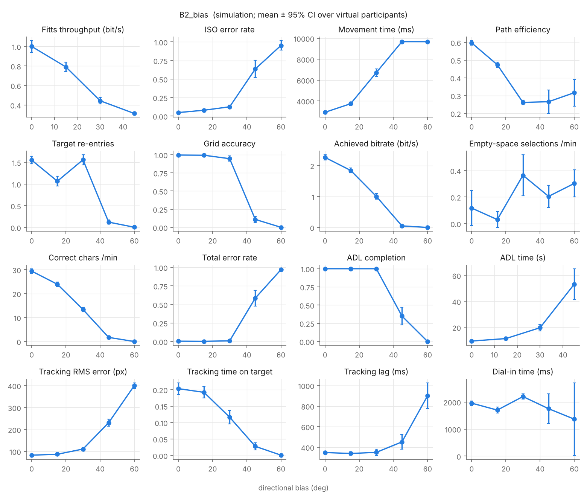
sweep.png (simulation (synthetic data)). Levels: 0, 15, 30, 45, 60
Show table: Measurement properties across the sweep (32 rows) Measurement properties across the sweep Metric Spearman ρ Monotone fraction First-step d Min. detectable level Adjacent-level AUC Undefined At floor At ceiling Fitts throughput (bit/s) −0.760 1 −1.012 15 0.868 0.437 n/a n/a ISO error rate −0.687 1 −0.432 30 0.759 0.247 0.150 0.115 ISO timeout rate −0.883 1 −0.313 30 0.727 0 0.437 0.107 ISO success rate −0.896 1 −0.460 30 0.790 0 0.320 0.093 Movement time (ms) −0.908 0.750 −2.036 15 0.823 0 n/a n/a iso_mt_completed_ms −0.458 0.500 −2.196 15 0.671 0.107 n/a n/a iso_tp_all_bps −0.814 0.750 −1.012 15 0.789 0.247 n/a n/a Path efficiency −0.649 0.500 −4.787 15 0.760 0.107 0 0 Target re-entries 0.764 0.250 1.448 n/a 0.311 0 0.287 n/a Overshoot (px) −0.949 1 −2.184 15 0.923 0 n/a n/a Movement variability (px) −0.978 1 −6.683 15 0.996 0 n/a n/a Endpoint error (px) −0.898 1 −0.093 30 0.863 0 n/a n/a Dial-in time (ms) −0.033 0.250 0.788 30 0.438 0.320 n/a n/a Submovements −0.912 0.750 −2.395 15 0.837 0 n/a n/a Movement onset (ms) −0.047 0.500 0.001 n/a 0.511 0 n/a n/a Grid accuracy −0.866 1 −0.091 45 0.707 0 0.307 0.520 Grid selection time (ms) −0.933 1 −1.594 15 0.862 0 n/a n/a Achieved bitrate (bit/s) −0.943 1 −1.718 15 0.866 0 0.320 n/a Empty-space selections /min −0.320 0.500 0.150 n/a 0.537 0 0.780 n/a Typing WPM −0.941 1 −3.361 15 0.901 0.123 n/a n/a Correct chars /min −0.944 1 −3.361 15 0.882 0.103 0.242 n/a Total error rate −0.819 0.750 0.105 45 0.688 0 0.577 0.167 Uncorrected error rate −0.814 1 0.000 45 0.681 0 n/a n/a Keystrokes per char −0.376 0.500 0.105 n/a 0.533 0.123 n/a n/a Correction burden −0.376 0.500 0.105 n/a 0.535 0.123 n/a n/a type_aborted_frac −0.803 1 0.000 45 0.625 0 n/a n/a ADL completion −0.797 1 0.000 45 0.625 0 0.330 0.670 ADL time (s) −0.832 1 −1.027 15 0.876 0.330 n/a n/a ADL wrong selections −0.105 0.750 0.000 n/a 0.502 0 0.947 n/a Tracking RMS error (px) −0.897 1 −0.385 30 0.844 0 n/a n/a Tracking time on target −0.833 1 −0.113 30 0.735 0 0.303 0 Tracking lag (ms) −0.368 0.750 0.098 60 0.584 0 n/a n/a
Show table: Median simulated retest ICC by metric (32 rows) Median simulated retest ICC by metric Item Value ADL completion 0.859 ADL time (s) 0.599 ADL wrong selections −0.017 Empty-space selections /min −0.013 Grid accuracy −0.023 Achieved bitrate (bit/s) 0.751 Grid selection time (ms) 0.778 Dial-in time (ms) 0.410 Endpoint error (px) 0.609 ISO error rate 0.157 Movement variability (px) 0.739 Iso mt completed ms 0.824 Movement time (ms) 0.829 Movement onset (ms) 0.694 Overshoot (px) 0.789 Path efficiency 0.638 Target re-entries 0.574 Submovements 0.862 ISO success rate 0.150 ISO timeout rate 0.527 Iso tp all bps 0.444 Fitts throughput (bit/s) 0.524 Tracking lag (ms) 0.170 Tracking RMS error (px) 0.288 Tracking time on target 0.105 Type aborted frac 0.818 Correct chars /min 0.931 Correction burden −0.054 Keystrokes per char −0.054 Total error rate −0.054 Uncorrected error rate 0.429 Typing WPM 0.917
Source: experiments/results/B2_bias/summary.json. Other data files in the repository folder: data.csv, properties.csv, retest_icc.csv.
Sensitivity to decoder update rate
Simulation (synthetic data)
B3_update_rate
· generated 2026-11-27T07:42:19Z
· neurometric 0.1.0, python 3.13.18, numpy 2.5.3, pandas 3.0.5
Simulation results. They characterise the measurement system under modelled input degradation; they are not human or clinical data.
Degradation axis decoder update interval (ms)
Virtual participants 60
Repetitions 2
Simulated modality bci_cursor_good_sim
Base profile bci_good
Runtime (s) 28.100
Trials simulated 37,800
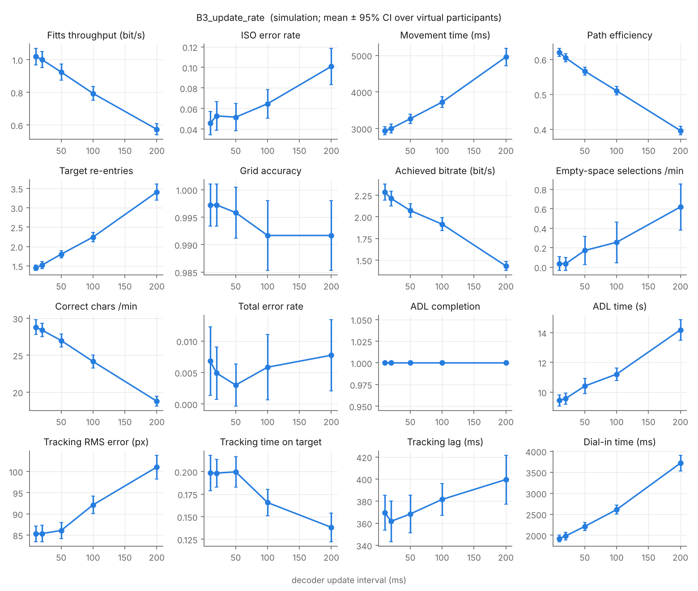
sweep.png (simulation (synthetic data)). Levels: 10, 20, 50, 100, 200
Show table: Measurement properties across the sweep (32 rows) Measurement properties across the sweep Metric Spearman ρ Monotone fraction First-step d Min. detectable level Adjacent-level AUC Undefined At floor At ceiling Fitts throughput (bit/s) −0.655 1 −0.124 50 0.675 0 n/a n/a ISO error rate −0.304 0.750 −0.106 200 0.569 0 0.260 0 ISO timeout rate −0.350 1 −0.129 200 0.542 0 0.900 0 ISO success rate −0.334 1 −0.115 200 0.576 0 0 0.260 Movement time (ms) −0.727 1 −0.300 50 0.706 0 n/a n/a iso_mt_completed_ms −0.726 1 −0.276 50 0.707 0 n/a n/a iso_tp_all_bps −0.655 1 −0.124 50 0.675 0 n/a n/a Path efficiency −0.822 1 −0.807 20 0.773 0 0 0 Target re-entries −0.801 1 −0.286 50 0.752 0 0 n/a Overshoot (px) −0.782 1 −0.807 20 0.735 0 n/a n/a Movement variability (px) −0.686 1 −0.263 50 0.687 0 n/a n/a Endpoint error (px) −0.392 0.750 −0.057 200 0.594 0 n/a n/a Dial-in time (ms) −0.770 1 −0.273 50 0.734 0 n/a n/a Submovements 0.020 0.500 −0.239 100 0.440 0 n/a n/a Movement onset (ms) −0.376 1 −0.133 50 0.584 0 n/a n/a Grid accuracy −0.116 1 0.000 n/a 0.508 0 0 0.937 Grid selection time (ms) −0.650 1 −0.302 50 0.677 0 n/a n/a Achieved bitrate (bit/s) −0.661 1 −0.241 50 0.680 0 0 n/a Empty-space selections /min −0.316 0.750 0.006 200 0.537 0 0.890 n/a Typing WPM −0.676 1 −0.213 50 0.684 0 n/a n/a Correct chars /min −0.676 1 −0.198 50 0.684 0 0 n/a Total error rate −0.017 0.500 0.068 n/a 0.502 0 0.913 0 Uncorrected error rate 0.024 0.500 0.129 n/a 0.498 0 n/a n/a Keystrokes per char −0.027 0.500 0.036 n/a 0.504 0 n/a n/a Correction burden −0.027 0.500 0.036 n/a 0.504 0 n/a n/a type_aborted_frac n/a 1 0.000 n/a 0.500 0 n/a n/a ADL completion n/a 1 0.000 n/a 0.500 0 0 1 ADL time (s) −0.628 1 −0.108 100 0.664 0 n/a n/a ADL wrong selections 0.000 0.500 0.129 n/a 0.500 0 0.983 n/a Tracking RMS error (px) −0.540 1 −0.008 100 0.620 0 n/a n/a Tracking time on target −0.305 0.750 −0.002 200 0.568 0 0 0 Tracking lag (ms) −0.152 0.750 0.092 n/a 0.528 0 n/a n/a
Show table: Median simulated retest ICC by metric (32 rows) Median simulated retest ICC by metric Item Value ADL completion n/a ADL time (s) 0.572 ADL wrong selections −3.3e−16 Empty-space selections /min −0.025 Grid accuracy 3.0e−15 Achieved bitrate (bit/s) 0.658 Grid selection time (ms) 0.699 Dial-in time (ms) 0.760 Endpoint error (px) 0.106 ISO error rate 0.135 Movement variability (px) 0.637 Iso mt completed ms 0.837 Movement time (ms) 0.879 Movement onset (ms) 0.746 Overshoot (px) 0.806 Path efficiency 0.816 Target re-entries 0.786 Submovements 0.892 ISO success rate 0.204 ISO timeout rate 0.301 Iso tp all bps 0.617 Fitts throughput (bit/s) 0.625 Tracking lag (ms) 0.346 Tracking RMS error (px) 0.522 Tracking time on target 0.029 Type aborted frac n/a Correct chars /min 0.866 Correction burden 0.154 Keystrokes per char 0.154 Total error rate 0.124 Uncorrected error rate 1.6e−16 Typing WPM 0.861
Source: experiments/results/B3_update_rate/summary.json. Other data files in the repository folder: data.csv, properties.csv, retest_icc.csv.
Sensitivity to gain mismatch
Simulation (synthetic data)
B4_gain
· generated 2026-11-27T07:43:26Z
· neurometric 0.1.0, python 3.13.18, numpy 2.5.3, pandas 3.0.5
Simulation results. They characterise the measurement system under modelled input degradation; they are not human or clinical data.
Degradation axis decoder gain
Virtual participants 60
Repetitions 2
Simulated modality bci_cursor_good_sim
Base profile bci_good
Runtime (s) 66.800
Trials simulated 45,360
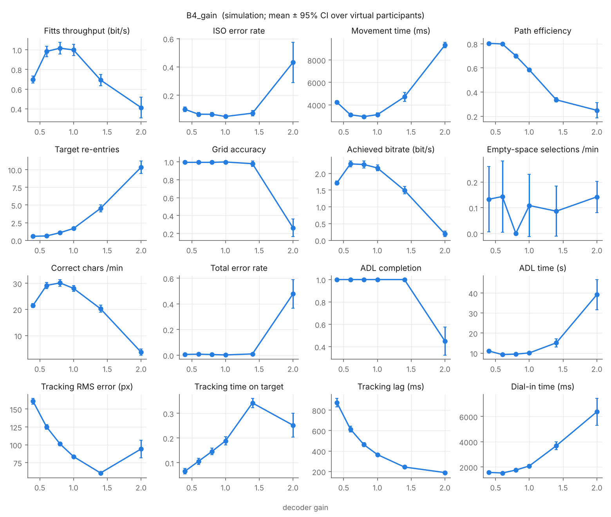
sweep.png (simulation (synthetic data)). Levels: 0.400, 0.600, 0.800, 1, 1.400, 2
Show table: Measurement properties across the sweep (32 rows) Measurement properties across the sweep Metric Spearman ρ Monotone fraction First-step d Min. detectable level Adjacent-level AUC Undefined At floor At ceiling Fitts throughput (bit/s) −0.390 0.400 0.106 0.336 0.512 0.156 n/a n/a ISO error rate −0.291 0.600 −0.223 0.693 0.527 0.094 0.230 0.018 ISO timeout rate −0.526 0.600 −0.129 0.693 0.513 0 0.689 0.036 ISO success rate −0.455 0.600 −0.228 0.693 0.521 0 0.108 0.189 Movement time (ms) −0.559 0.400 0.640 0.336 0.490 0 n/a n/a iso_mt_completed_ms −0.402 0.400 0.632 0.336 0.510 0.036 n/a n/a iso_tp_all_bps −0.446 0.400 0.106 0.336 0.507 0.097 n/a n/a Path efficiency 0.302 0.400 4.517 0.336 0.410 0.036 0 0 Target re-entries 0.180 0.400 1.877 0.336 0.420 0 0 n/a Overshoot (px) 0.190 0.400 3.128 0.336 0.405 0 n/a n/a Movement variability (px) −0.572 0.600 −0.255 0.336 0.543 0 n/a n/a Endpoint error (px) −0.464 0.600 −0.199 0.693 0.538 0 n/a n/a Dial-in time (ms) 0.250 0.400 1.114 0.336 0.452 0.108 n/a n/a Submovements −0.591 0.600 −0.024 0.336 0.581 0 n/a n/a Movement onset (ms) −0.170 0.600 −0.853 0.223 0.549 0 n/a n/a Grid accuracy −0.341 0.600 −0.174 0.693 0.505 0 0.092 0.811 Grid selection time (ms) −0.462 0.400 0.514 0.336 0.483 0 n/a n/a Achieved bitrate (bit/s) −0.472 0.400 0.385 0.336 0.486 0 0.103 n/a Empty-space selections /min −0.153 0.400 0.227 n/a 0.502 0 0.917 n/a Typing WPM −0.521 0.400 0.842 0.336 0.480 0.014 n/a n/a Correct chars /min −0.527 0.400 0.842 0.336 0.480 0.006 0.081 n/a Total error rate −0.269 0.600 −0.147 0.693 0.508 0 0.806 0.031 Uncorrected error rate −0.302 0.800 0.000 0.693 0.501 0 n/a n/a Keystrokes per char −0.126 0.600 −0.147 n/a 0.505 0.014 n/a n/a Correction burden −0.126 0.600 −0.147 n/a 0.505 0.014 n/a n/a type_aborted_frac −0.284 0.800 0.000 0.693 0.500 0 n/a n/a ADL completion −0.279 0.800 0.000 0.693 0.500 0 0.092 0.908 ADL time (s) −0.249 0.400 0.361 0.336 0.472 0.092 n/a n/a ADL wrong selections −0.102 0.600 −0.227 n/a 0.500 0 0.958 n/a Tracking RMS error (px) −0.492 0.600 −2.089 0.223 0.619 0 n/a n/a Tracking time on target −0.358 0.600 −0.498 0.511 0.559 0 0.008 0 Tracking lag (ms) −0.252 0.600 −1.029 0.223 0.573 0 n/a n/a
Show table: Median simulated retest ICC by metric (32 rows) Median simulated retest ICC by metric Item Value ADL completion 0.770 ADL time (s) 0.610 ADL wrong selections −2.1e−16 Empty-space selections /min −0.038 Grid accuracy −0.037 Achieved bitrate (bit/s) 0.767 Grid selection time (ms) 0.781 Dial-in time (ms) 0.585 Endpoint error (px) 0.210 ISO error rate 0.083 Movement variability (px) 0.679 Iso mt completed ms 0.778 Movement time (ms) 0.853 Movement onset (ms) 0.785 Overshoot (px) 0.658 Path efficiency 0.744 Target re-entries 0.707 Submovements 0.907 ISO success rate 0.165 ISO timeout rate 0.596 Iso tp all bps 0.639 Fitts throughput (bit/s) 0.690 Tracking lag (ms) 0.179 Tracking RMS error (px) 0.496 Tracking time on target 0.089 Type aborted frac 0.967 Correct chars /min 0.891 Correction burden 0.029 Keystrokes per char 0.029 Total error rate 0.020 Uncorrected error rate −5.2e−17 Typing WPM 0.889
Source: experiments/results/B4_gain/summary.json. Other data files in the repository folder: data.csv, properties.csv, retest_icc.csv.
Sensitivity to added input noise
Simulation (synthetic data)
B_noise
· generated 2026-11-27T07:35:27Z
· neurometric 0.1.0, python 3.13.18, numpy 2.5.3, pandas 3.0.5
Simulation results. They characterise the measurement system under modelled input degradation; they are not human or clinical data.
Degradation axis noise scale (x base white 30 + AR 40 px/s)
Virtual participants 60
Repetitions 2
Simulated modality bci_cursor_good_sim
Base profile bci_good
Runtime (s) 97
Trials simulated 52,920
sweep.png (simulation (synthetic data)). Levels: 0, 0.500, 1, 2, 3, 4, 6
Show table: Measurement properties across the sweep (32 rows) Measurement properties across the sweep Metric Spearman ρ Monotone fraction First-step d Min. detectable level Adjacent-level AUC Undefined At floor At ceiling Fitts throughput (bit/s) −0.809 1 −1.069 0.500 0.792 0.424 n/a n/a ISO error rate −0.912 1 −0.055 1 0.757 0.088 0.305 0.081 ISO timeout rate −0.946 1 0.000 2 0.793 0 0.431 0.012 ISO success rate −0.947 1 −0.055 1 0.822 0 0.136 0.279 Movement time (ms) −0.939 1 −0.987 0.500 0.833 0 n/a n/a iso_mt_completed_ms −0.722 0.833 −0.987 0.500 0.678 0.012 n/a n/a iso_tp_all_bps −0.893 1 −1.069 0.500 0.771 0.088 n/a n/a Path efficiency −0.846 1 −1.844 0.500 0.755 0.012 0 0 Target re-entries −0.742 0.667 −0.734 0.500 0.638 0 0 n/a Overshoot (px) −0.801 1 −0.310 1 0.734 0 n/a n/a Movement variability (px) −0.989 1 −7.130 0.500 0.997 0 n/a n/a Endpoint error (px) −0.945 1 −0.224 1 0.897 0 n/a n/a Dial-in time (ms) −0.673 0.667 −1.350 0.500 0.645 0.136 n/a n/a Submovements −0.963 1 −2.301 0.500 0.892 0 n/a n/a Movement onset (ms) 0.082 0.500 0.023 n/a 0.490 0 n/a n/a Grid accuracy −0.831 1 −0.105 3 0.696 0 0.026 0.583 Grid selection time (ms) −0.894 0.833 0.237 2 0.778 0 n/a n/a Achieved bitrate (bit/s) −0.895 0.833 0.177 2 0.781 0 0.052 n/a Empty-space selections /min −0.600 0.667 −0.180 2 0.514 0 0.560 n/a Typing WPM −0.908 1 −0.108 1 0.805 0.002 n/a n/a Correct chars /min −0.910 1 −0.108 1 0.805 0 0.107 n/a Total error rate −0.864 0.833 −0.057 2 0.712 0 0.531 0.002 Uncorrected error rate −0.722 1 0.000 3 0.625 0 n/a n/a Keystrokes per char −0.841 0.833 −0.057 2 0.673 0.002 n/a n/a Correction burden −0.841 0.833 −0.057 2 0.673 0.002 n/a n/a type_aborted_frac −0.623 1 0.000 n/a 0.583 0 n/a n/a ADL completion −0.487 1 0.000 6 0.553 0 0.102 0.898 ADL time (s) −0.813 1 −0.106 2 0.732 0.102 n/a n/a ADL wrong selections −0.497 0.833 0.129 4 0.546 0 0.838 n/a Tracking RMS error (px) −0.801 1 −0.262 2 0.693 0 n/a n/a Tracking time on target −0.649 0.833 −0.305 2 0.625 0 0.002 0 Tracking lag (ms) −0.043 0.667 −0.113 n/a 0.516 0 n/a n/a
Show table: Median simulated retest ICC by metric (32 rows) Median simulated retest ICC by metric Item Value ADL completion 0.160 ADL time (s) 0.418 ADL wrong selections 0.036 Empty-space selections /min −0.046 Grid accuracy 0.388 Achieved bitrate (bit/s) 0.671 Grid selection time (ms) 0.690 Dial-in time (ms) 0.155 Endpoint error (px) 0.112 ISO error rate 0.035 Movement variability (px) 0.750 Iso mt completed ms 0.468 Movement time (ms) 0.733 Movement onset (ms) 0.696 Overshoot (px) 0.660 Path efficiency 0.551 Target re-entries 0.700 Submovements 0.784 ISO success rate 0.251 ISO timeout rate 0.487 Iso tp all bps 0.325 Fitts throughput (bit/s) 0.611 Tracking lag (ms) 0.090 Tracking RMS error (px) 0.427 Tracking time on target 0.108 Type aborted frac 0.202 Correct chars /min 0.787 Correction burden −0.047 Keystrokes per char −0.047 Total error rate 0.222 Uncorrected error rate 2.1e−16 Typing WPM 0.789
Source: experiments/results/B_noise/summary.json. Other data files in the repository folder: data.csv, properties.csv, retest_icc.csv.
Sensitivity to latency (position-control pointer)
Simulation (synthetic data)
C2_latency_mouse
· generated 2026-11-27T07:38:00Z
· neurometric 0.1.0, python 3.13.18, numpy 2.5.3, pandas 3.0.5
Simulation results. They characterise the measurement system under modelled input degradation; they are not human or clinical data.
Degradation axis latency (ms), position-control pointer
Virtual participants 60
Repetitions 2
Simulated modality mouse_sim
Base profile identity
Runtime (s) 42.200
Trials simulated 52,920
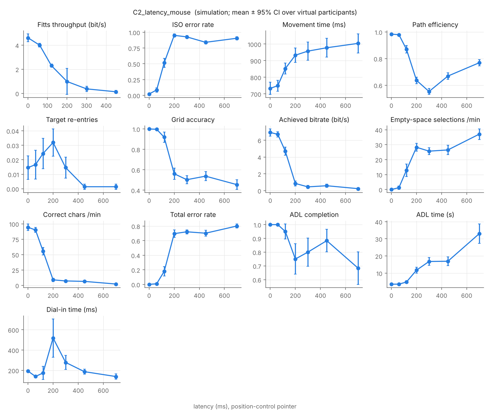
sweep.png (simulation (synthetic data)). Levels: 0, 60, 120, 200, 300, 450, 700
Show table: Measurement properties across the sweep (29 rows) Measurement properties across the sweep Metric Spearman ρ Monotone fraction First-step d Min. detectable level Adjacent-level AUC Undefined At floor At ceiling Fitts throughput (bit/s) −0.716 1 −0.474 120 0.873 0.605 n/a n/a ISO error rate −0.695 0.667 −0.435 120 0.626 0 0.160 0.176 ISO timeout rate n/a 1 0.000 n/a 0.500 0 1 0 ISO success rate −0.694 0.667 −0.435 120 0.626 0 0.176 0.160 Movement time (ms) −0.485 1 −0.417 120 0.587 0 n/a n/a iso_mt_completed_ms −0.485 1 −0.417 120 0.587 0 n/a n/a iso_tp_all_bps −0.943 1 −0.479 120 0.841 0 n/a n/a Path efficiency −0.666 0.667 −0.209 120 0.602 0 0 0 Target re-entries 0.202 0.667 −0.042 n/a 0.482 0 0.755 n/a Overshoot (px) −0.802 1 −0.287 120 0.668 0 n/a n/a Movement variability (px) −0.864 0.833 0.308 200 0.691 0 n/a n/a Endpoint error (px) −0.938 1 −0.397 120 0.818 0 n/a n/a Dial-in time (ms) −0.011 0.333 1.973 200 0.414 0.176 n/a n/a Submovements 0.192 0.500 −0.547 60 0.509 0 n/a n/a Movement onset (ms) −0.036 0.500 −4.259 60 0.602 0 n/a n/a Grid accuracy −0.767 0.833 −0.184 200 0.602 0 0.002 0.407 Grid selection time (ms) −0.853 1 −0.103 120 0.720 0 n/a n/a Achieved bitrate (bit/s) −0.790 0.833 −0.195 120 0.652 0 0.329 n/a Empty-space selections /min −0.757 0.833 −0.261 120 0.623 0 0.331 n/a Typing WPM −0.879 1 −0.264 120 0.731 0.002 n/a n/a Correct chars /min −0.824 1 −0.264 120 0.682 0 0.198 n/a Total error rate −0.798 0.833 −0.212 120 0.641 0 0.336 0.002 Uncorrected error rate −0.778 0.833 0.000 120 0.608 0 n/a n/a Keystrokes per char −0.795 1 −0.212 200 0.637 0.002 n/a n/a Correction burden −0.795 1 −0.212 200 0.637 0.002 n/a n/a type_aborted_frac n/a 1 0.000 n/a 0.500 0 n/a n/a ADL completion −0.280 0.667 0.000 200 0.526 0 0.133 0.867 ADL time (s) −0.850 1 −0.126 120 0.699 0.133 n/a n/a ADL wrong selections −0.673 0.833 0.000 200 0.599 0 0.481 n/a
Show table: Median simulated retest ICC by metric (29 rows) Median simulated retest ICC by metric Item Value ADL completion 0.017 ADL time (s) 0.192 ADL wrong selections 0.043 Empty-space selections /min 0.631 Grid accuracy 0.381 Achieved bitrate (bit/s) 0.585 Grid selection time (ms) 0.438 Dial-in time (ms) 0.707 Endpoint error (px) 0.871 ISO error rate 0.706 Movement variability (px) 0.453 Iso mt completed ms 0.783 Movement time (ms) 0.783 Movement onset (ms) 0.809 Overshoot (px) 0.105 Path efficiency 0.660 Target re-entries 0.025 Submovements 0.735 ISO success rate 0.706 ISO timeout rate n/a Iso tp all bps 0.725 Fitts throughput (bit/s) 0.704 Type aborted frac n/a Correct chars /min 0.451 Correction burden 0.154 Keystrokes per char 0.154 Total error rate 0.173 Uncorrected error rate 0.346 Typing WPM 0.373
Source: experiments/results/C2_latency_mouse/summary.json. Other data files in the repository folder: data.csv, properties.csv, retest_icc.csv.
Sensitivity to added latency (velocity control)
Simulation (synthetic data)
C_latency
· generated 2026-11-27T07:37:18Z
· neurometric 0.1.0, python 3.13.18, numpy 2.5.3, pandas 3.0.5
Simulation results. They characterise the measurement system under modelled input degradation; they are not human or clinical data.
Degradation axis total decoder output latency (ms; base profile has 60)
Virtual participants 60
Repetitions 2
Simulated modality bci_cursor_good_sim
Base profile bci_good
Runtime (s) 111.4
Trials simulated 52,920
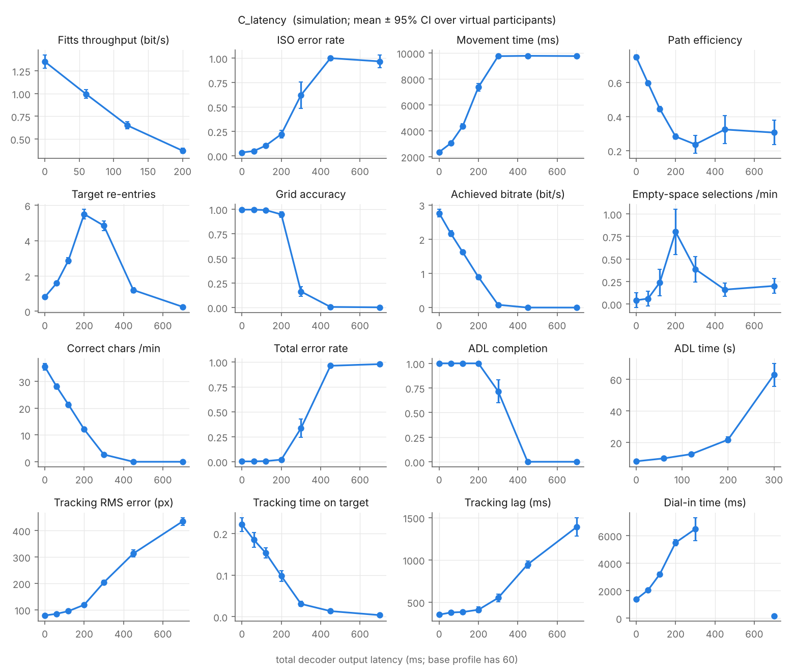
sweep.png (simulation (synthetic data)). Levels: 0, 60, 120, 200, 300, 450, 700
Show table: Measurement properties across the sweep (32 rows) Measurement properties across the sweep Metric Spearman ρ Monotone fraction First-step d Min. detectable level Adjacent-level AUC Undefined At floor At ceiling Fitts throughput (bit/s) −0.885 1 −1.635 60 0.905 0.476 n/a n/a ISO error rate −0.811 0.833 −0.218 120 0.712 0.305 0.168 0.127 ISO timeout rate −0.888 0.833 0.000 200 0.675 0 0.419 0.121 ISO success rate −0.925 0.833 −0.218 120 0.737 0 0.386 0.112 Movement time (ms) −0.908 0.833 −3.336 60 0.800 0 n/a n/a iso_mt_completed_ms −0.582 0.833 −3.336 60 0.715 0.121 n/a n/a iso_tp_all_bps −0.903 0.667 −1.635 60 0.749 0.305 n/a n/a Path efficiency −0.730 0.833 −5.714 60 0.775 0.121 0 0.005 Target re-entries 0.135 0.500 −3.752 60 0.553 0 0.007 n/a Overshoot (px) −0.964 1 −2.750 60 0.897 0 n/a n/a Movement variability (px) −0.975 1 −1.510 60 0.935 0 n/a n/a Endpoint error (px) −0.938 1 −0.267 120 0.847 0 n/a n/a Dial-in time (ms) −0.924 1 −3.345 60 0.913 0.386 n/a n/a Submovements −0.947 1 −2.615 60 0.838 0 n/a n/a Movement onset (ms) −0.275 0.833 −2.627 60 0.621 0 n/a n/a Grid accuracy −0.877 0.833 0.000 300 0.657 0 0.324 0.505 Grid selection time (ms) −0.952 0.833 −2.420 60 0.847 0 n/a n/a Achieved bitrate (bit/s) −0.961 1 −1.952 60 0.845 0 0.340 n/a Empty-space selections /min −0.231 0.667 −0.040 200 0.505 0 0.750 n/a Typing WPM −0.968 1 −3.115 60 0.883 0.107 n/a n/a Correct chars /min −0.967 1 −3.115 60 0.852 0.079 0.274 n/a Total error rate −0.855 1 −0.006 300 0.662 0 0.545 0.174 Uncorrected error rate −0.834 1 0.000 300 0.644 0 n/a n/a Keystrokes per char −0.255 0.833 0.000 300 0.513 0.107 n/a n/a Correction burden −0.255 0.833 0.000 300 0.513 0.107 n/a n/a type_aborted_frac −0.813 1 0.000 300 0.583 0 n/a n/a ADL completion −0.805 1 0.000 300 0.583 0 0.326 0.674 ADL time (s) −0.937 1 −1.464 60 0.918 0.326 n/a n/a ADL wrong selections −0.151 0.667 0.000 n/a 0.506 0 0.936 n/a Tracking RMS error (px) −0.959 1 −1.116 60 0.886 0 n/a n/a Tracking time on target −0.897 1 −0.448 120 0.753 0 0.143 0 Tracking lag (ms) −0.738 1 −0.357 300 0.707 0 n/a n/a
Show table: Median simulated retest ICC by metric (32 rows) Median simulated retest ICC by metric Item Value ADL completion 0.739 ADL time (s) 0.568 ADL wrong selections −0.017 Empty-space selections /min 0.119 Grid accuracy 2.0e−15 Achieved bitrate (bit/s) 0.721 Grid selection time (ms) 0.669 Dial-in time (ms) 0.741 Endpoint error (px) 0.441 ISO error rate 0.164 Movement variability (px) 0.748 Iso mt completed ms 0.529 Movement time (ms) 0.855 Movement onset (ms) 0.798 Overshoot (px) 0.823 Path efficiency 0.453 Target re-entries 0.724 Submovements 0.892 ISO success rate 0.259 ISO timeout rate 0.468 Iso tp all bps 0.585 Fitts throughput (bit/s) 0.667 Tracking lag (ms) 0.315 Tracking RMS error (px) 0.608 Tracking time on target 0.133 Type aborted frac 0.729 Correct chars /min 0.873 Correction burden −0.044 Keystrokes per char −0.044 Total error rate 0.021 Uncorrected error rate 0.062 Typing WPM 0.863
Source: experiments/results/C_latency/summary.json. Other data files in the repository folder: data.csv, properties.csv, retest_icc.csv.
Sensitivity to signal dropouts
Simulation (synthetic data)
D_dropout
· generated 2026-11-27T07:38:33Z
· neurometric 0.1.0, python 3.13.18, numpy 2.5.3, pandas 3.0.5
Simulation results. They characterise the measurement system under modelled input degradation; they are not human or clinical data.
Degradation axis dropout episodes per second (mean 500 ms)
Virtual participants 60
Repetitions 2
Simulated modality bci_cursor_good_sim
Base profile bci_good
Runtime (s) 33.100
Trials simulated 45,360
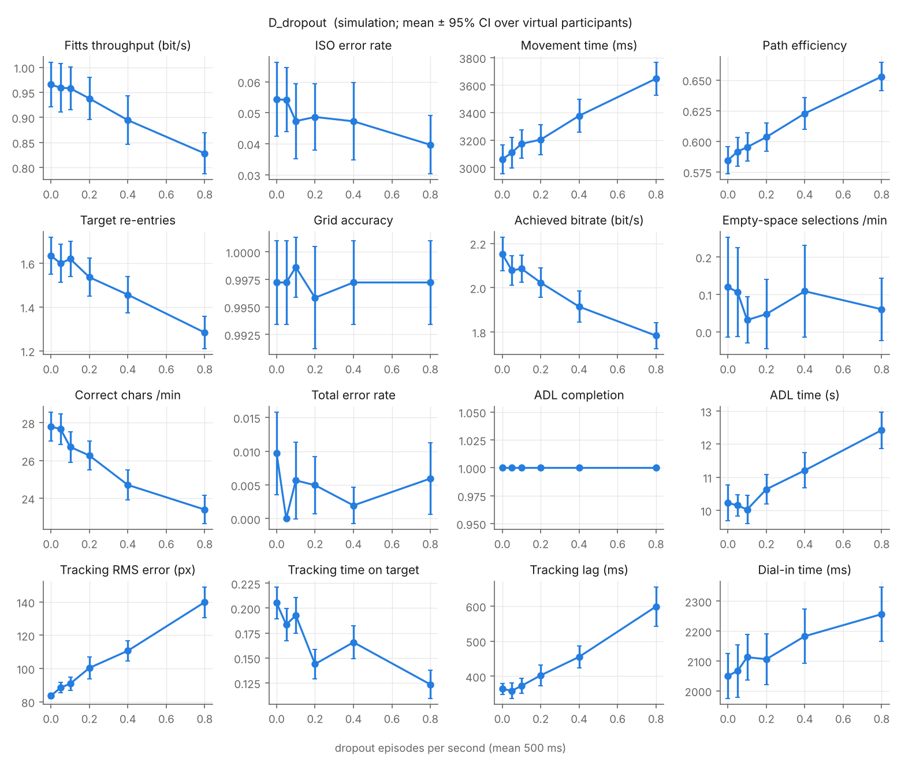
sweep.png (simulation (synthetic data)). Levels: 0, 0.050, 0.100, 0.200, 0.400, 0.800
Show table: Measurement properties across the sweep (32 rows) Measurement properties across the sweep Metric Spearman ρ Monotone fraction First-step d Min. detectable level Adjacent-level AUC Undefined At floor At ceiling Fitts throughput (bit/s) −0.239 1 −0.034 0.800 0.545 0 n/a n/a ISO error rate 0.104 0.200 0.003 n/a 0.484 0 0.300 0 ISO timeout rate 0.021 0.600 0.184 n/a 0.498 0 0.986 0 ISO success rate 0.105 0.200 0.027 n/a 0.483 0 0 0.297 Movement time (ms) −0.379 1 −0.243 0.200 0.573 0 n/a n/a iso_mt_completed_ms −0.382 1 −0.279 0.100 0.574 0 n/a n/a iso_tp_all_bps −0.239 1 −0.034 0.800 0.545 0 n/a n/a Path efficiency 0.426 0 0.340 n/a 0.419 0 0 0 Target re-entries 0.344 0.200 0.155 n/a 0.434 0 0 n/a Overshoot (px) 0.210 0.200 0.156 n/a 0.463 0 n/a n/a Movement variability (px) 0.322 0 0.034 n/a 0.440 0 n/a n/a Endpoint error (px) 0.190 0.400 0.091 n/a 0.463 0 n/a n/a Dial-in time (ms) −0.202 0.800 −0.082 0.400 0.534 0 n/a n/a Submovements 0.069 0.200 −0.050 n/a 0.491 0 n/a n/a Movement onset (ms) −0.576 1 −0.505 0.050 0.620 0 n/a n/a Grid accuracy −0.009 0.400 0.000 n/a 0.500 0 0 0.967 Grid selection time (ms) −0.417 0.800 −0.342 0.200 0.584 0 n/a n/a Achieved bitrate (bit/s) −0.405 0.800 −0.333 0.200 0.581 0 0 n/a Empty-space selections /min 0.023 0.400 0.019 n/a 0.498 0 0.964 n/a Typing WPM −0.439 1 −0.074 0.100 0.579 0 n/a n/a Correct chars /min −0.442 1 −0.074 0.100 0.580 0 0 n/a Total error rate 0.040 0.400 0.402 n/a 0.493 0 0.931 0 Uncorrected error rate −0.098 0.800 0.000 n/a 0.503 0 n/a n/a Keystrokes per char 0.064 0.400 0.398 n/a 0.491 0 n/a n/a Correction burden 0.064 0.400 0.398 n/a 0.491 0 n/a n/a type_aborted_frac n/a 1 0.000 n/a 0.500 0 n/a n/a ADL completion n/a 1 0.000 n/a 0.500 0 0 1 ADL time (s) −0.356 0.600 0.041 0.800 0.565 0 n/a n/a ADL wrong selections 0.005 0.400 0.074 n/a 0.498 0 0.969 n/a Tracking RMS error (px) −0.669 1 −0.409 0.200 0.647 0 n/a n/a Tracking time on target −0.364 0.600 −0.231 0.200 0.572 0 0 0 Tracking lag (ms) −0.452 0.800 0.060 0.400 0.587 0 n/a n/a
Show table: Median simulated retest ICC by metric (32 rows) Median simulated retest ICC by metric Item Value ADL completion n/a ADL time (s) 0.322 ADL wrong selections −0.009 Empty-space selections /min −0.038 Grid accuracy −0.031 Achieved bitrate (bit/s) 0.651 Grid selection time (ms) 0.618 Dial-in time (ms) 0.643 Endpoint error (px) 0.084 ISO error rate 0.145 Movement variability (px) 0.529 Iso mt completed ms 0.774 Movement time (ms) 0.774 Movement onset (ms) 0.529 Overshoot (px) 0.788 Path efficiency 0.794 Target re-entries 0.657 Submovements 0.831 ISO success rate 0.158 ISO timeout rate −1.2e−16 Iso tp all bps 0.350 Fitts throughput (bit/s) 0.350 Tracking lag (ms) 0.073 Tracking RMS error (px) 0.061 Tracking time on target −0.009 Type aborted frac n/a Correct chars /min 0.759 Correction burden −0.050 Keystrokes per char −0.050 Total error rate −0.069 Uncorrected error rate −2.1e−16 Typing WPM 0.766
Source: experiments/results/D_dropout/summary.json. Other data files in the repository folder: data.csv, properties.csv, retest_icc.csv.
Sensitivity to calibration deterioration
Simulation (synthetic data)
E_drift
· generated 2026-11-27T07:39:41Z
· neurometric 0.1.0, python 3.13.18, numpy 2.5.3, pandas 3.0.5
Simulation results. They characterise the measurement system under modelled input degradation; they are not human or clinical data.
Degradation axis calibration deterioration index k
Virtual participants 60
Repetitions 2
Simulated modality bci_cursor_good_sim
Base profile bci_good
Runtime (s) 67.600
Trials simulated 37,800
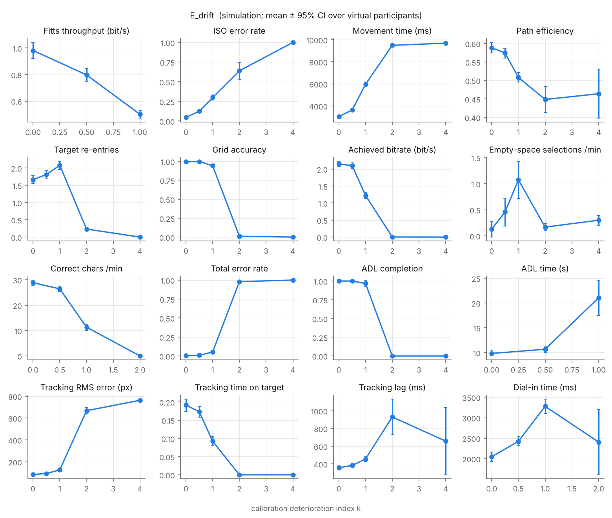
sweep.png (simulation (synthetic data)). Levels: 0, 0.500, 1, 2, 4
Show table: Measurement properties across the sweep (32 rows) Measurement properties across the sweep Metric Spearman ρ Monotone fraction First-step d Min. detectable level Adjacent-level AUC Undefined At floor At ceiling Fitts throughput (bit/s) −0.736 1 −0.781 0.500 0.818 0.410 n/a n/a ISO error rate −0.836 1 −0.921 0.500 0.853 0.240 0.114 0.105 ISO timeout rate −0.932 1 −0.531 0.500 0.829 0 0.340 0.063 ISO success rate −0.954 1 −1.071 0.500 0.900 0 0.290 0.073 Movement time (ms) −0.921 1 −1.791 0.500 0.852 0 n/a n/a iso_mt_completed_ms −0.479 0.750 −1.565 0.500 0.658 0.063 n/a n/a iso_tp_all_bps −0.783 1 −0.780 0.500 0.834 0.240 n/a n/a Path efficiency −0.479 0.750 −0.517 0.500 0.651 0.063 0 0 Target re-entries 0.704 0.500 −0.442 1 0.333 0 0.213 n/a Overshoot (px) 0.344 0.250 1.236 n/a 0.424 0 n/a n/a Movement variability (px) −0.956 1 −2.092 0.500 0.943 0 n/a n/a Endpoint error (px) −0.930 1 −0.222 1 0.916 0 n/a n/a Dial-in time (ms) −0.305 0.667 −1.060 0.500 0.633 0.290 n/a n/a Submovements −0.910 0.750 −1.935 0.500 0.846 0 n/a n/a Movement onset (ms) −0.584 0.750 0.037 2 0.660 0 n/a n/a Grid accuracy −0.884 0.750 0.105 1 0.700 0 0.373 0.473 Grid selection time (ms) −0.911 1 −0.305 1 0.799 0 n/a n/a Achieved bitrate (bit/s) −0.909 1 −0.218 1 0.766 0 0.380 n/a Empty-space selections /min −0.228 0.750 −0.301 1 0.531 0 0.700 n/a Typing WPM −0.850 1 −0.847 0.500 0.882 0.310 n/a n/a Correct chars /min −0.852 1 −0.831 0.500 0.881 0.307 0.135 n/a Total error rate −0.885 1 −0.176 1 0.721 0 0.460 0.347 Uncorrected error rate −0.866 0.750 0.129 2 0.665 0 n/a n/a Keystrokes per char −0.316 1 −0.227 1 0.525 0.310 n/a n/a Correction burden −0.316 1 −0.227 1 0.525 0.310 n/a n/a type_aborted_frac −0.866 1 0.000 n/a 0.625 0 n/a n/a ADL completion −0.864 1 0.000 n/a 0.625 0 0.407 0.593 ADL time (s) −0.620 1 −0.367 1 0.750 0.407 n/a n/a ADL wrong selections 0.015 0.500 0.000 n/a 0.498 0 0.973 n/a Tracking RMS error (px) −0.930 1 −0.845 0.500 0.882 0 n/a n/a Tracking time on target −0.880 1 −0.264 1 0.728 0 0.403 0 Tracking lag (ms) −0.287 0.750 −0.249 1 0.588 0.160 n/a n/a
Show table: Median simulated retest ICC by metric (32 rows) Median simulated retest ICC by metric Item Value ADL completion −5.2e−16 ADL time (s) 0.715 ADL wrong selections −0.009 Empty-space selections /min −0.046 Grid accuracy 0.085 Achieved bitrate (bit/s) 0.523 Grid selection time (ms) 0.429 Dial-in time (ms) 0.303 Endpoint error (px) 0.339 ISO error rate 0.193 Movement variability (px) 0.684 Iso mt completed ms 0.299 Movement time (ms) 0.498 Movement onset (ms) 0.770 Overshoot (px) 0.759 Path efficiency 0.582 Target re-entries 0.477 Submovements 0.650 ISO success rate 0.329 ISO timeout rate 0 Iso tp all bps 0.352 Fitts throughput (bit/s) 0.416 Tracking lag (ms) 0.222 Tracking RMS error (px) 0.319 Tracking time on target −0.043 Type aborted frac n/a Correct chars /min 0.736 Correction burden −0.057 Keystrokes per char −0.057 Total error rate −0.027 Uncorrected error rate 2.1e−16 Typing WPM 0.659
Source: experiments/results/E_drift/summary.json. Other data files in the repository folder: data.csv, properties.csv, retest_icc.csv.
Sensitivity to missed selections
Simulation (synthetic data)
F2_missed_selection
· generated 2026-11-27T07:40:45Z
· neurometric 0.1.0, python 3.13.18, numpy 2.5.3, pandas 3.0.5
Simulation results. They characterise the measurement system under modelled input degradation; they are not human or clinical data.
Degradation axis missed-selection probability
Virtual participants 60
Repetitions 2
Simulated modality bci_cursor_good_sim
Base profile bci_good
Runtime (s) 30.200
Trials simulated 37,800
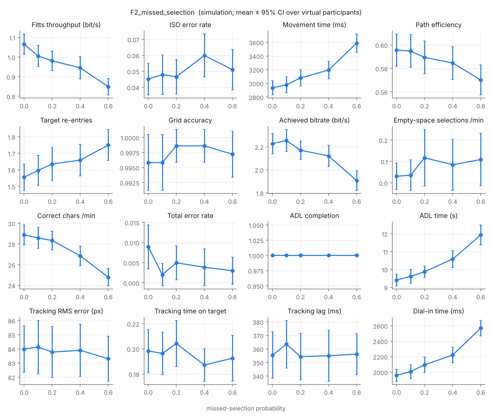
sweep.png (simulation (synthetic data)). Levels: 0, 0.100, 0.200, 0.400, 0.600
Show table: Measurement properties across the sweep (32 rows) Measurement properties across the sweep Metric Spearman ρ Monotone fraction First-step d Min. detectable level Adjacent-level AUC Undefined At floor At ceiling Fitts throughput (bit/s) −0.329 1 −0.340 0.400 0.573 0 n/a n/a ISO error rate −0.058 0.500 −0.047 n/a 0.506 0 0.310 0 ISO timeout rate −0.171 1 −0.129 n/a 0.513 0 0.967 0 ISO success rate −0.071 0.500 −0.058 n/a 0.510 0 0 0.303 Movement time (ms) −0.394 1 −0.217 0.200 0.591 0 n/a n/a iso_mt_completed_ms −0.387 1 −0.199 0.200 0.589 0 n/a n/a iso_tp_all_bps −0.329 1 −0.340 0.400 0.573 0 n/a n/a Path efficiency −0.171 1 −0.043 0.600 0.540 0 0 0 Target re-entries −0.189 1 −0.188 0.600 0.545 0 0 n/a Overshoot (px) 0.017 0.250 0.112 n/a 0.495 0 n/a n/a Movement variability (px) −0.105 0.750 −0.111 n/a 0.524 0 n/a n/a Endpoint error (px) −0.025 0.500 −0.229 n/a 0.507 0 n/a n/a Dial-in time (ms) −0.475 1 −0.235 0.200 0.613 0 n/a n/a Submovements −0.282 1 −0.188 0.200 0.565 0 n/a n/a Movement onset (ms) −0.025 0.750 −0.037 n/a 0.506 0 n/a n/a Grid accuracy 0.053 0.750 0.000 n/a 0.498 0 0 0.967 Grid selection time (ms) −0.311 0.750 0.086 0.400 0.572 0 n/a n/a Achieved bitrate (bit/s) −0.297 0.750 0.115 0.600 0.570 0 0 n/a Empty-space selections /min −0.066 0.750 −0.014 n/a 0.504 0 0.967 n/a Typing WPM −0.357 1 −0.158 0.400 0.582 0 n/a n/a Correct chars /min −0.355 1 −0.148 0.400 0.581 0 0 n/a Total error rate 0.097 0.250 0.311 n/a 0.488 0 0.927 0 Uncorrected error rate 0.034 0.750 0.074 n/a 0.498 0 n/a n/a Keystrokes per char 0.094 0.250 0.282 n/a 0.490 0 n/a n/a Correction burden 0.094 0.250 0.282 n/a 0.490 0 n/a n/a type_aborted_frac n/a 1 0.000 n/a 0.500 0 n/a n/a ADL completion n/a 1 0.000 n/a 0.500 0 0 1 ADL time (s) −0.416 1 −0.158 0.400 0.596 0 n/a n/a ADL wrong selections −0.062 0.750 0.129 n/a 0.502 0 0.987 n/a Tracking RMS error (px) 0.039 0.500 −0.019 n/a 0.493 0 n/a n/a Tracking time on target −0.035 0.500 −0.023 n/a 0.508 0 0 0 Tracking lag (ms) 0.011 0.750 −0.092 n/a 0.501 0 n/a n/a
Show table: Median simulated retest ICC by metric (32 rows) Median simulated retest ICC by metric Item Value ADL completion n/a ADL time (s) 0.539 ADL wrong selections −0.017 Empty-space selections /min −0.040 Grid accuracy −0.026 Achieved bitrate (bit/s) 0.691 Grid selection time (ms) 0.713 Dial-in time (ms) 0.718 Endpoint error (px) −0.082 ISO error rate 0.120 Movement variability (px) 0.622 Iso mt completed ms 0.812 Movement time (ms) 0.813 Movement onset (ms) 0.740 Overshoot (px) 0.833 Path efficiency 0.842 Target re-entries 0.695 Submovements 0.837 ISO success rate 0.107 ISO timeout rate −1.2e−16 Iso tp all bps 0.629 Fitts throughput (bit/s) 0.629 Tracking lag (ms) 0.089 Tracking RMS error (px) 0.453 Tracking time on target 0.127 Type aborted frac n/a Correct chars /min 0.864 Correction burden 1.0e−16 Keystrokes per char 5.2e−16 Total error rate −0.023 Uncorrected error rate −0.017 Typing WPM 0.847
Source: experiments/results/F2_missed_selection/summary.json. Other data files in the repository folder: data.csv, properties.csv, retest_icc.csv.
Sensitivity to false selections
Simulation (synthetic data)
F_false_activation
· generated 2026-11-27T07:40:14Z
· neurometric 0.1.0, python 3.13.18, numpy 2.5.3, pandas 3.0.5
Simulation results. They characterise the measurement system under modelled input degradation; they are not human or clinical data.
Degradation axis false selections per minute
Virtual participants 60
Repetitions 2
Simulated modality bci_cursor_good_sim
Base profile bci_good
Runtime (s) 33.600
Trials simulated 45,360
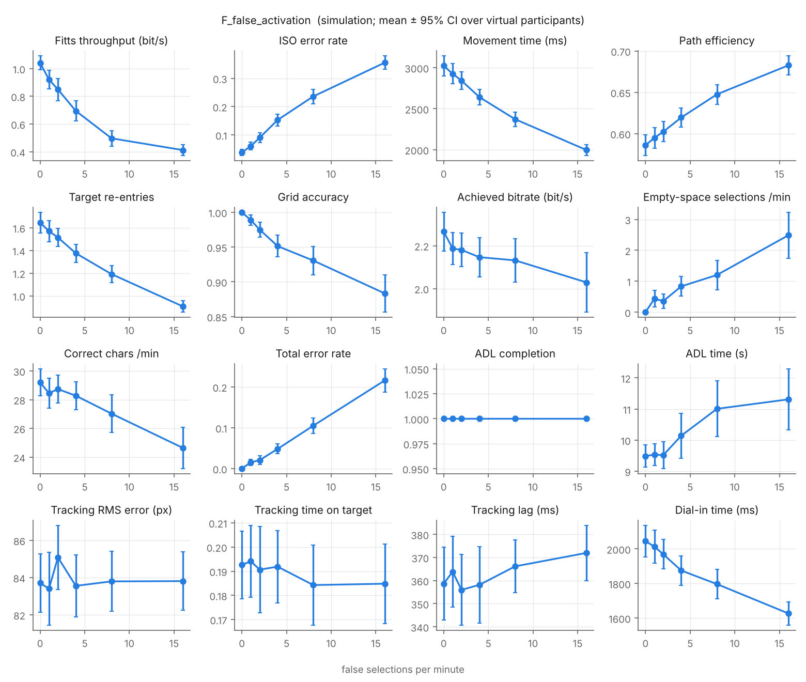
sweep.png (simulation (synthetic data)). Levels: 0, 1, 2, 4, 8, 16
Show table: Measurement properties across the sweep (32 rows) Measurement properties across the sweep Metric Spearman ρ Monotone fraction First-step d Min. detectable level Adjacent-level AUC Undefined At floor At ceiling Fitts throughput (bit/s) −0.675 1 −0.489 2 0.626 0 n/a n/a ISO error rate −0.798 1 −0.315 2 0.701 0 0.153 0 ISO timeout rate 0.046 0.800 −0.129 n/a 0.500 0 0.997 0 ISO success rate −0.798 1 −0.324 2 0.700 0 0 0.153 Movement time (ms) 0.653 0 0.394 n/a 0.348 0 n/a n/a iso_mt_completed_ms 0.652 0 0.432 n/a 0.348 0 n/a n/a iso_tp_all_bps −0.685 1 −0.489 2 0.628 0 n/a n/a Path efficiency 0.551 0 0.469 n/a 0.386 0 0 0 Target re-entries 0.630 0 0.310 n/a 0.359 0 0 n/a Overshoot (px) 0.269 0 0.261 n/a 0.451 0 n/a n/a Movement variability (px) 0.455 0 0.345 n/a 0.410 0 n/a n/a Endpoint error (px) −0.806 1 −0.556 1 0.695 0 n/a n/a Dial-in time (ms) 0.380 0 0.138 n/a 0.431 0 n/a n/a Submovements 0.468 0 0.414 n/a 0.402 0 n/a n/a Movement onset (ms) 0.040 0.200 0.422 n/a 0.491 0 n/a n/a Grid accuracy −0.520 1 −0.389 2 0.584 0 0 0.656 Grid selection time (ms) 0.368 0.200 −0.044 n/a 0.434 0 n/a n/a Achieved bitrate (bit/s) −0.137 1 −0.280 n/a 0.528 0 0 n/a Empty-space selections /min −0.423 0.800 −0.411 4 0.566 0 0.747 n/a Typing WPM −0.208 0.800 −0.474 16 0.542 0 n/a n/a Correct chars /min −0.272 0.800 −0.494 8 0.556 0 0 n/a Total error rate −0.732 1 −0.522 1 0.664 0 0.525 0 Uncorrected error rate −0.369 1 −0.129 8 0.536 0 n/a n/a Keystrokes per char −0.683 1 −0.492 4 0.641 0 n/a n/a Correction burden −0.683 1 −0.492 4 0.641 0 n/a n/a type_aborted_frac n/a 1 0.000 n/a 0.500 0 n/a n/a ADL completion n/a 1 0.000 n/a 0.500 0 0 1 ADL time (s) −0.172 0.800 −0.034 n/a 0.527 0 n/a n/a ADL wrong selections −0.449 1 −0.129 8 0.545 0 0.831 n/a Tracking RMS error (px) −0.013 0.600 0.045 n/a 0.502 0 n/a n/a Tracking time on target −0.059 0.400 0.018 n/a 0.512 0 0 0 Tracking lag (ms) −0.033 0.800 −0.064 n/a 0.508 0 n/a n/a
Show table: Median simulated retest ICC by metric (32 rows) Median simulated retest ICC by metric Item Value ADL completion n/a ADL time (s) 0.373 ADL wrong selections −0.023 Empty-space selections /min 0.034 Grid accuracy 0.031 Achieved bitrate (bit/s) 0.478 Grid selection time (ms) 0.594 Dial-in time (ms) 0.747 Endpoint error (px) 0.009 ISO error rate 0.205 Movement variability (px) 0.523 Iso mt completed ms 0.750 Movement time (ms) 0.750 Movement onset (ms) 0.731 Overshoot (px) 0.810 Path efficiency 0.766 Target re-entries 0.641 Submovements 0.838 ISO success rate 0.213 ISO timeout rate 0 Iso tp all bps 0.329 Fitts throughput (bit/s) 0.329 Tracking lag (ms) 0.122 Tracking RMS error (px) 0.455 Tracking time on target 0.064 Type aborted frac n/a Correct chars /min 0.784 Correction burden −0.004 Keystrokes per char −0.004 Total error rate 0.023 Uncorrected error rate −0.023 Typing WPM 0.784
Source: experiments/results/F_false_activation/summary.json. Other data files in the repository folder: data.csv, properties.csv, retest_icc.csv.
Comparison of metrics across all degradation sweeps
Simulation (synthetic data)
G_metric_comparison
· generated 2026-11-27T07:52:59Z
· neurometric 0.1.0, python 3.13.18, numpy 2.5.3, pandas 3.0.5
Simulation results. They characterise the measurement system under modelled input degradation; they are not human or clinical data.
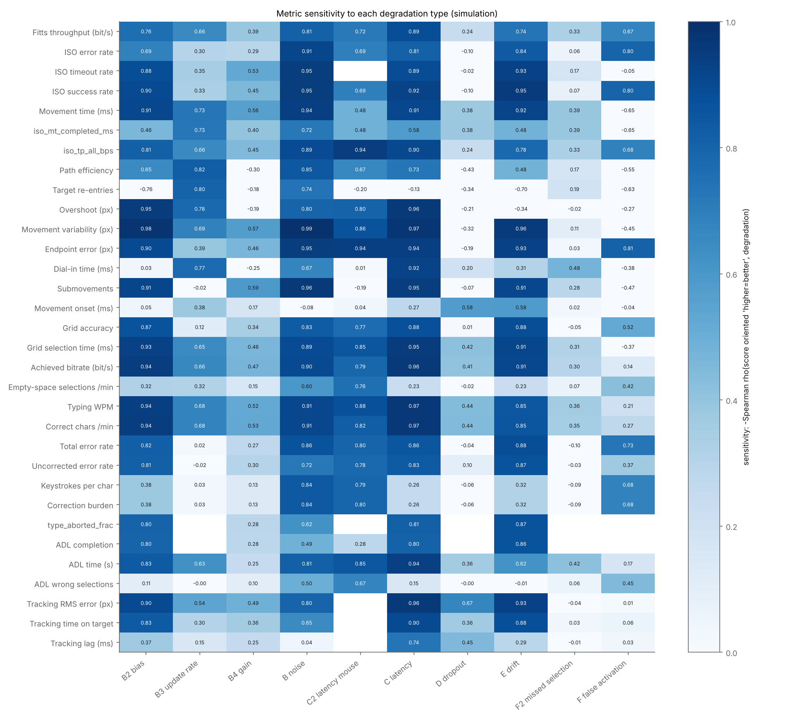
sensitivity_heatmap.png (simulation (synthetic data)). Show table: Ranking (32 rows) Ranking Metric Mean sensitivity Min sensitivity Mean monotone frac Mean auc adjacent Max undefined frac Max floor frac Max ceiling frac Median retest icc Baseline retest icc type_aborted_frac 0.776 0.623 1 0.542 0 n/a n/a 0.729 n/a iso_tp_all_bps 0.694 0.239 0.935 0.691 0.305 n/a n/a 0.577 0.653 Correct chars /min 0.693 0.272 0.978 0.698 0.307 0.274 n/a 0.858 0.888 Typing WPM 0.692 0.208 0.978 0.707 0.310 n/a n/a 0.835 0.884 Achieved bitrate (bit/s) 0.666 0.137 0.913 0.676 0 0.380 n/a 0.665 0.722 ADL completion 0.647 0.280 0.963 0.541 0 0.407 1 0.097 n/a Fitts throughput (bit/s) 0.645 0.239 1 0.719 0.605 n/a n/a 0.598 0.653 Endpoint error (px) 0.631 −0.190 0.850 0.714 0 n/a n/a 0.204 0.195 ADL time (s) 0.625 0.172 0.933 0.680 0.407 n/a n/a 0.527 0.644 Grid selection time (ms) 0.617 −0.368 0.824 0.675 0 n/a n/a 0.694 0.746 ISO success rate 0.613 −0.105 0.800 0.666 0 0.386 0.303 0.212 0.134 Tracking RMS error (px) 0.596 −0.039 0.887 0.687 0 n/a n/a 0.484 0.513 Movement time (ms) 0.556 −0.653 0.843 0.660 0 n/a n/a 0.795 0.862 ISO error rate 0.555 −0.104 0.772 0.649 0.305 0.310 0.176 0.145 0.115 Total error rate 0.537 −0.097 0.730 0.608 0 0.931 0.347 2.5e−16 −0.047 Grid accuracy 0.535 −0.053 0.841 0.596 0 0.373 0.967 9.8e−16 −0.039 Movement variability (px) 0.531 −0.455 0.731 0.717 0 n/a n/a 0.661 0.590 ISO timeout rate 0.513 −0.046 0.915 0.609 0 1 0.121 0.040 −5.9e−17 Tracking time on target 0.503 0.035 0.760 0.618 0 0.403 0 0.087 0.052 Uncorrected error rate 0.492 −0.034 0.848 0.576 0 n/a n/a 1.0e−16 1.0e−16 iso_mt_completed_ms 0.397 −0.652 0.769 0.604 0.121 n/a n/a 0.786 0.860 Overshoot (px) 0.384 −0.344 0.633 0.620 0 n/a n/a 0.791 0.797 Path efficiency 0.376 −0.551 0.639 0.607 0.121 0 0.005 0.783 0.830 Submovements 0.363 −0.468 0.633 0.640 0 n/a n/a 0.844 0.893 Correction burden 0.348 −0.094 0.702 0.551 0.310 n/a n/a −0.016 −0.047 Keystrokes per char 0.348 −0.094 0.702 0.551 0.310 n/a n/a −0.016 −0.047 Dial-in time (ms) 0.335 −0.380 0.635 0.581 0.386 n/a n/a 0.696 0.761 Empty-space selections /min 0.324 −0.023 0.680 0.532 0 0.967 n/a −0.017 −0.024 Tracking lag (ms) 0.258 −0.011 0.783 0.566 0.160 n/a n/a 0.157 0.170 ADL wrong selections 0.213 −0.015 0.693 0.520 0 0.987 n/a −5.2e−16 5.2e−17 Movement onset (ms) 0.200 −0.082 0.670 0.563 0 n/a n/a 0.743 0.731 Target re-entries −0.116 −0.764 0.531 0.483 0 0.755 n/a 0.641 0.707
Sweeps B_noise C_latency C2_latency_mouse D_dropout E_drift F_false_activation F2_missed_selection B2_bias B3_update_rate B4_gain Source: experiments/results/G_metric_comparison/summary.json. Other data files in the repository folder: all_properties.csv, ranking.csv.
Fixed versus adaptive task difficulty
Simulation (synthetic data)
H_adaptive
· generated 2026-11-27T07:52:23Z
· neurometric 0.1.0, python 3.13.18, numpy 2.5.3, pandas 3.0.5
Simulation results. They characterise the measurement system under modelled input degradation; they are not human or clinical data.
Design 6 noise levels x 60 virtual participants; fixed 100 px and 40 px grids (40 trials) vs 40-trial 2-down/1-up size staircase (step x1.4, 6-116 px)
Caveat Adaptive scores are on a different scale; comparability across battery versions must be maintained by fixing the staircase rule and version.
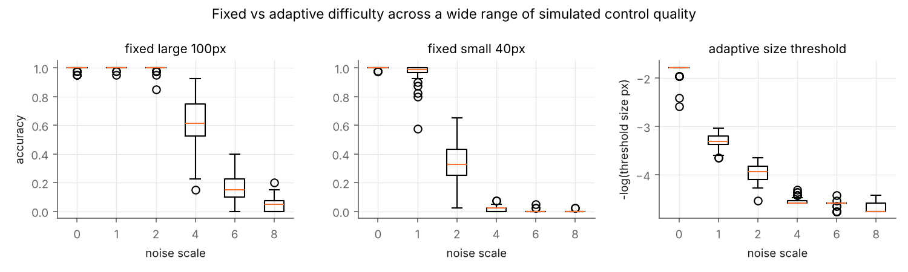
fixed_vs_adaptive.png (simulation (synthetic data)). Results Design At floor At ceiling Rho with device noise Within level rho with latent ability Min adjacent auc Mean adjacent auc adaptive_size_threshold 0.139 0.147 −0.947 0.290 0.711 0.893 fixed_large_100px 0.056 0.439 −0.906 0.416 0.450 0.775 fixed_small_40px 0.400 0.236 −0.935 0.346 0.509 0.791
Source: experiments/results/H_adaptive/summary.json. Other data files in the repository folder: comparison.csv, data.csv.
Simulated test-retest reliability versus test length
Simulation (synthetic data)
I_test_retest
· generated 2026-11-27T07:43:54Z
· neurometric 0.1.0, python 3.13.18, numpy 2.5.3, pandas 3.0.5
Simulation results. They characterise the measurement system under modelled input degradation; they are not human or clinical data.
Design 60 virtual participants (latent ability SD 0.3) x 2 sessions x 4 lengths x 3 modalities
Note design text corrected: run used --n 60
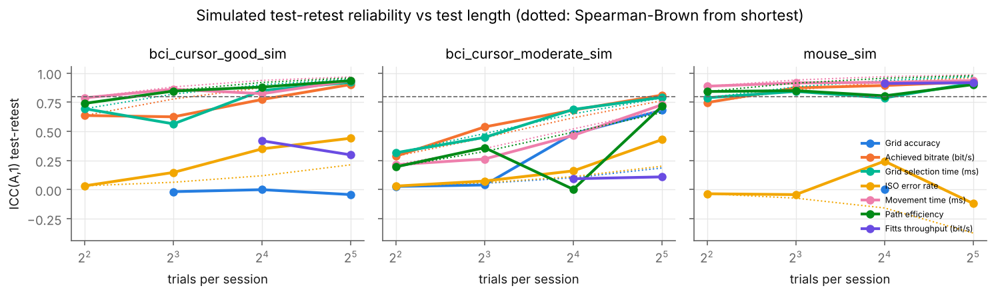
reliability_vs_length.png (simulation (synthetic data)). Show table: Results (84 rows) Results Simulated modality Length Metric Icc a1 Sd Mean Spearman brown pred Sem Mdc95 bci_cursor_good_sim 4 Grid accuracy n/a 0 1 n/a n/a n/a bci_cursor_good_sim 8 Grid accuracy −0.017 0.016 0.998 n/a 0.016 0.045 bci_cursor_good_sim 16 Grid accuracy −4.2e−16 0.008 0.999 n/a 0.008 0.022 bci_cursor_good_sim 32 Grid accuracy −0.042 0.009 0.998 n/a 0.009 0.025 bci_cursor_good_sim 4 Achieved bitrate (bit/s) 0.636 0.422 2.208 0.636 0.255 0.706 bci_cursor_good_sim 8 Achieved bitrate (bit/s) 0.625 0.381 2.200 0.777 0.233 0.646 bci_cursor_good_sim 16 Achieved bitrate (bit/s) 0.773 0.330 2.147 0.875 0.157 0.435 bci_cursor_good_sim 32 Achieved bitrate (bit/s) 0.902 0.325 2.133 0.933 0.102 0.282 bci_cursor_good_sim 4 Grid selection time (ms) 0.694 405.2 2,123 0.694 224.1 621.2 bci_cursor_good_sim 8 Grid selection time (ms) 0.564 373.8 2,110 0.819 246.8 684.1 bci_cursor_good_sim 16 Grid selection time (ms) 0.850 354.1 2,156 0.901 137.1 379.9 bci_cursor_good_sim 32 Grid selection time (ms) 0.920 348.6 2,164 0.948 98.332 272.6 bci_cursor_good_sim 4 ISO error rate 0.033 0.080 0.029 0.033 0.079 0.219 bci_cursor_good_sim 8 ISO error rate 0.148 0.064 0.039 0.063 0.059 0.164 bci_cursor_good_sim 16 ISO error rate 0.350 0.043 0.033 0.119 0.034 0.095 bci_cursor_good_sim 32 ISO error rate 0.441 0.041 0.039 0.213 0.031 0.085 bci_cursor_good_sim 4 Movement time (ms) 0.787 639.4 2,882 0.787 294.9 817.3 bci_cursor_good_sim 8 Movement time (ms) 0.861 536.3 2,847 0.881 200.0 554.3 bci_cursor_good_sim 16 Movement time (ms) 0.823 480.3 2,857 0.937 202.1 560.1 bci_cursor_good_sim 32 Movement time (ms) 0.935 499.1 2,843 0.967 127.1 352.4 bci_cursor_good_sim 4 Path efficiency 0.740 0.078 0.605 0.740 0.040 0.110 bci_cursor_good_sim 8 Path efficiency 0.845 0.075 0.606 0.850 0.029 0.082 bci_cursor_good_sim 16 Path efficiency 0.880 0.070 0.607 0.919 0.024 0.067 bci_cursor_good_sim 32 Path efficiency 0.935 0.070 0.607 0.958 0.018 0.049 bci_cursor_good_sim 4 Fitts throughput (bit/s) n/a n/a n/a n/a n/a n/a bci_cursor_good_sim 8 Fitts throughput (bit/s) n/a n/a n/a n/a n/a n/a bci_cursor_good_sim 16 Fitts throughput (bit/s) 0.419 0.271 1.029 n/a 0.207 0.573 bci_cursor_good_sim 32 Fitts throughput (bit/s) 0.298 0.292 0.974 n/a 0.244 0.677 bci_cursor_moderate_sim 4 Grid accuracy 0.028 0.100 0.956 0.028 0.099 0.274 bci_cursor_moderate_sim 8 Grid accuracy 0.040 0.072 0.961 0.054 0.070 0.195 bci_cursor_moderate_sim 16 Grid accuracy 0.479 0.057 0.956 0.102 0.041 0.115 bci_cursor_moderate_sim 32 Grid accuracy 0.682 0.054 0.953 0.186 0.031 0.085 bci_cursor_moderate_sim 4 Achieved bitrate (bit/s) 0.287 0.368 1.149 0.287 0.311 0.861 bci_cursor_moderate_sim 8 Achieved bitrate (bit/s) 0.538 0.316 1.138 0.446 0.215 0.596 bci_cursor_moderate_sim 16 Achieved bitrate (bit/s) 0.682 0.259 1.098 0.616 0.146 0.405 bci_cursor_moderate_sim 32 Achieved bitrate (bit/s) 0.810 0.239 1.119 0.763 0.104 0.289 bci_cursor_moderate_sim 4 Grid selection time (ms) 0.317 1,086 3,989 0.317 897.7 2,488 bci_cursor_moderate_sim 8 Grid selection time (ms) 0.448 925.8 3,954 0.481 687.6 1,906 bci_cursor_moderate_sim 16 Grid selection time (ms) 0.688 734.6 3,999 0.649 410.4 1,138 bci_cursor_moderate_sim 32 Grid selection time (ms) 0.792 687.5 3,889 0.787 313.8 869.9 bci_cursor_moderate_sim 4 ISO error rate 0.031 0.270 0.297 0.031 0.266 0.736 bci_cursor_moderate_sim 8 ISO error rate 0.074 0.189 0.342 0.059 0.182 0.503 bci_cursor_moderate_sim 16 ISO error rate 0.161 0.137 0.347 0.112 0.125 0.348 bci_cursor_moderate_sim 32 ISO error rate 0.429 0.103 0.343 0.202 0.078 0.216 bci_cursor_moderate_sim 4 Movement time (ms) 0.214 1,578 6,240 0.214 1,399 3,879 bci_cursor_moderate_sim 8 Movement time (ms) 0.263 1,047 5,849 0.352 898.7 2,491 bci_cursor_moderate_sim 16 Movement time (ms) 0.465 967.0 5,971 0.521 707.1 1,960 bci_cursor_moderate_sim 32 Movement time (ms) 0.728 772.7 5,929 0.685 402.8 1,117 bci_cursor_moderate_sim 4 Path efficiency 0.196 0.110 0.417 0.196 0.098 0.273 bci_cursor_moderate_sim 8 Path efficiency 0.360 0.070 0.425 0.327 0.056 0.155 bci_cursor_moderate_sim 16 Path efficiency 0.003 0.057 0.423 0.493 0.057 0.158 bci_cursor_moderate_sim 32 Path efficiency 0.716 0.050 0.422 0.660 0.026 0.073 bci_cursor_moderate_sim 4 Fitts throughput (bit/s) n/a n/a n/a n/a n/a n/a bci_cursor_moderate_sim 8 Fitts throughput (bit/s) n/a n/a n/a n/a n/a n/a bci_cursor_moderate_sim 16 Fitts throughput (bit/s) 0.093 0.135 0.417 n/a 0.128 0.356 bci_cursor_moderate_sim 32 Fitts throughput (bit/s) 0.110 0.124 0.352 n/a 0.117 0.323 mouse_sim 4 Grid accuracy n/a 0 1 n/a n/a n/a mouse_sim 8 Grid accuracy n/a 0 1 n/a n/a n/a mouse_sim 16 Grid accuracy 6.2e−16 0.006 0.999 n/a 0.006 0.016 mouse_sim 32 Grid accuracy n/a 0 1 n/a n/a n/a mouse_sim 4 Achieved bitrate (bit/s) 0.746 1.628 6.994 0.746 0.820 2.272 mouse_sim 8 Achieved bitrate (bit/s) 0.873 1.436 6.923 0.855 0.511 1.417 mouse_sim 16 Achieved bitrate (bit/s) 0.893 1.522 6.902 0.922 0.498 1.381 mouse_sim 32 Achieved bitrate (bit/s) 0.925 1.439 6.885 0.959 0.395 1.095 mouse_sim 4 Grid selection time (ms) 0.788 166.3 684.1 0.788 76.574 212.3 mouse_sim 8 Grid selection time (ms) 0.842 138.2 681.4 0.881 54.921 152.2 mouse_sim 16 Grid selection time (ms) 0.787 164.7 689.1 0.937 76.034 210.8 mouse_sim 32 Grid selection time (ms) 0.915 142.6 685.9 0.967 41.650 115.4 mouse_sim 4 ISO error rate −0.035 0.063 0.013 −0.035 0.064 0.179 mouse_sim 8 ISO error rate −0.042 0.025 0.005 −0.073 0.026 0.071 mouse_sim 16 ISO error rate 0.244 0.024 0.008 −0.157 0.021 0.057 mouse_sim 32 ISO error rate −0.119 0.016 0.006 −0.372 0.017 0.048 mouse_sim 4 Movement time (ms) 0.887 169.9 731.0 0.887 57.126 158.3 mouse_sim 8 Movement time (ms) 0.915 158.8 743.2 0.940 46.222 128.1 mouse_sim 16 Movement time (ms) 0.920 153.4 735.9 0.969 43.359 120.2 mouse_sim 32 Movement time (ms) 0.935 155.5 737.2 0.984 39.708 110.1 mouse_sim 4 Path efficiency 0.841 0.007 0.986 0.841 0.003 0.008 mouse_sim 8 Path efficiency 0.849 0.008 0.985 0.914 0.003 0.009 mouse_sim 16 Path efficiency 0.805 0.007 0.985 0.955 0.003 0.009 mouse_sim 32 Path efficiency 0.901 0.007 0.985 0.977 0.002 0.006 mouse_sim 4 Fitts throughput (bit/s) n/a n/a n/a n/a n/a n/a mouse_sim 8 Fitts throughput (bit/s) n/a n/a n/a n/a n/a n/a mouse_sim 16 Fitts throughput (bit/s) 0.910 1.090 4.439 n/a 0.328 0.908 mouse_sim 32 Fitts throughput (bit/s) 0.917 1.068 4.459 n/a 0.308 0.852
Source: experiments/results/I_test_retest/summary.json. Other data files in the repository folder: data.csv, reliability.csv.
Responsiveness to a known simulated improvement
Simulation (synthetic data)
K_responsiveness
· generated 2026-11-27T07:44:14Z
· neurometric 0.1.0, python 3.13.18, numpy 2.5.3, pandas 3.0.5
Simulation results. They characterise the measurement system under modelled input degradation; they are not human or clinical data.
Design 60 virtual participants; session 1 bci_moderate; session 2: first half improved decoder (noise x0.6, fewer false/missed selections), second half unchanged
Note MDC is statistically detectable change; it is NOT a minimal clinically important difference.
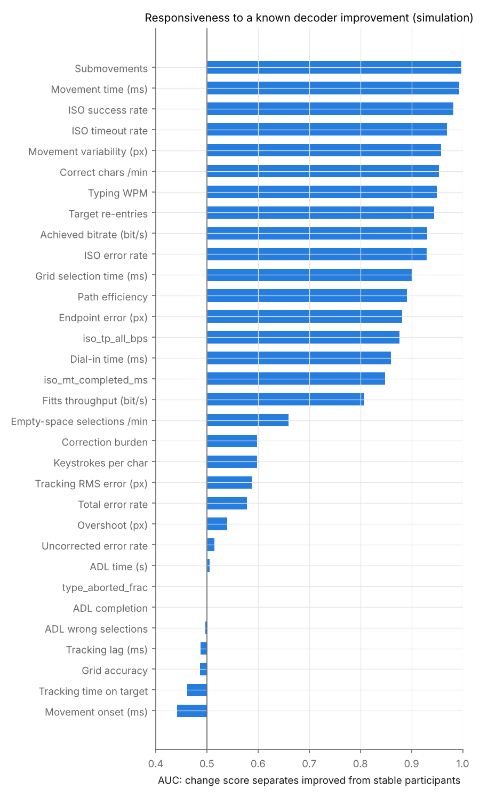
responsiveness_auc.png (simulation (synthetic data)). Show table: Results (32 rows) Results Metric Srm improved Guyatt ri Auc improved vs stable Icc stable Mdc95 Frac improved exceeding mdc Frac stable exceeding mdc Submovements 3.786 3.092 0.998 0.523 11.027 0.867 0 Movement time (ms) 3.174 2.691 0.993 0.512 1,459 0.733 0 ISO success rate 3.013 2.753 0.982 0.305 0.299 0.733 0.033 ISO timeout rate 2.167 1.672 0.969 0.306 0.263 0.333 0 Movement variability (px) 1.966 2.268 0.958 0.562 5.655 0.533 0.033 Correct chars /min 2.449 2.455 0.953 0.635 5.488 0.567 0.067 Typing WPM 2.522 2.281 0.949 0.614 1.109 0.467 0.033 Target re-entries 2.534 1.778 0.944 0.242 1.271 0.433 0.033 Achieved bitrate (bit/s) 1.807 2.002 0.931 0.554 0.462 0.467 0.033 ISO error rate 1.842 1.673 0.930 0.410 0.330 0.300 0 Grid selection time (ms) 1.337 1.279 0.900 0.459 1,342 0.200 0 Path efficiency 2.038 1.700 0.891 0.479 0.097 0.400 0.067 Endpoint error (px) 1.308 1.717 0.881 0.430 19.332 0.267 0.033 iso_tp_all_bps 1.573 1.667 0.877 0.043 0.257 0.400 0.033 Dial-in time (ms) 1.547 1.262 0.860 0.101 1,802 0.200 0.033 iso_mt_completed_ms 1.433 1.626 0.848 0.587 989.3 0.367 0.067 Fitts throughput (bit/s) 1.469 1.474 0.808 −0.354 0.259 0.385 0 Empty-space selections /min 0.720 0.484 0.659 −0.292 6.541 0 0.033 Correction burden 0.700 0.434 0.598 0.276 0.249 0.033 0.067 Keystrokes per char 0.700 0.434 0.598 0.276 0.499 0.033 0.067 Tracking RMS error (px) 0.602 0.437 0.588 0.449 37.204 0.033 0.067 Total error rate 0.719 0.595 0.578 0.221 0.189 0.033 0.033 Overshoot (px) 0.293 0.392 0.540 0.749 15.269 0.133 0.033 Uncorrected error rate 0.348 0.286 0.514 −0.161 0.072 0 0 ADL time (s) 0.446 0.265 0.506 0.078 16.515 0.033 0.033 type_aborted_frac n/a n/a 0.500 n/a n/a n/a n/a ADL completion n/a n/a 0.500 n/a n/a n/a n/a ADL wrong selections 0.328 0.197 0.497 −0.045 1.307 0 0.033 Tracking lag (ms) −0.062 −0.080 0.487 0.440 205.6 0.033 0.033 Grid accuracy 0.461 0.304 0.487 0.100 0.194 0.033 0.033 Tracking time on target 0.230 0.231 0.462 0.235 0.131 0.100 0.067 Movement onset (ms) −0.098 −0.086 0.442 0.672 143.7 0 0.033
Source: experiments/results/K_responsiveness/summary.json. Other data files in the repository folder: data.csv, responsiveness.csv.
The same tasks across simulated input modalities
Simulation (synthetic data)
L_cross_modality
· generated 2026-11-27T07:45:40Z
· neurometric 0.1.0, python 3.13.18, numpy 2.5.3, pandas 3.0.5
Simulation results. They characterise the measurement system under modelled input degradation; they are not human or clinical data.
Applicability ISO throughput and tracking are undefined for scanning; tracking only for velocity-control users
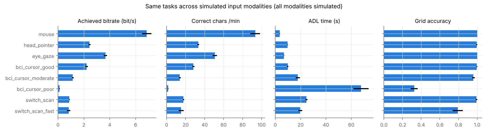
modalities.png (simulation (synthetic data)). Modalities mouse_sim head_pointer_sim eye_gaze_sim bci_cursor_good_sim bci_cursor_moderate_sim bci_cursor_poor_sim switch_scan_sim switch_scan_fast_sim Means Mod Fitts throughput (bit/s) ISO error rate ISO timeout rate ISO success rate Movement time (ms) Iso mt completed ms Iso tp all bps Path efficiency Target re-entries Overshoot (px) Movement variability (px) Endpoint error (px) Dial-in time (ms) Submovements Movement onset (ms) Grid accuracy Grid selection time (ms) Achieved bitrate (bit/s) Empty-space selections /min Typing WPM Correct chars /min Total error rate Uncorrected error rate Keystrokes per char Correction burden Type aborted frac ADL completion ADL time (s) ADL wrong selections Tracking RMS error (px) Tracking time on target Tracking lag (ms) mouse_sim 4.421 0.031 0 0.969 740.4 740.4 4.421 0.984 0.004 0.071 2.392 11.996 195.9 1.076 330.7 1 690.3 6.858 0 17.496 93.312 0 0 1 0 0 1 3.555 0 n/a n/a n/a head_pointer_sim 1.701 0 0 1 2,048 2,048 1.701 0.816 0.067 0.093 2.842 10.702 1,017 35.708 581.5 0.996 1,862 2.439 0 6.253 33.348 0.006 0 1.015 0.007 0 1 9.756 0.017 n/a n/a n/a eye_gaze_sim 2.322 0 0 1 1,566 1,566 2.322 0.423 2.029 1.953 8.514 11.944 1,064 35.439 280.1 1 1,260 3.664 0 9.508 50.692 0.010 9.8e−04 1.043 0.021 0 1 6.764 0 n/a n/a n/a bci_cursor_good_sim 0.982 0.054 0.001 0.945 3,096 3,088 0.982 0.589 1.650 35.272 11.509 17.236 2,083 14.393 481.4 0.996 2,091 2.216 0.108 5.286 28.170 0.007 0.001 1.012 0.006 0 1 9.809 0 86.762 0.180 377.3 bci_cursor_moderate_sim 0.373 0.424 0.306 0.415 6,717 5,311 0.357 0.402 2.933 53.308 33.932 40.827 3,730 42.427 537.5 0.960 3,850 1.146 1.920 2.634 13.880 0.078 0.011 1.158 0.079 0 1 17.729 0.133 123.5 0.101 487.3 bci_cursor_poor_sim n/a 0.904 0.553 0.046 7,726 4,883 0.197 0.416 1.017 104.4 74.026 114.6 2,858 28.005 681.3 0.325 7,689 0.114 2.295 0.434 1.541 0.561 0.219 2.685 0.843 0.650 0.733 67.730 1.050 226.0 0.029 835.5 switch_scan_sim n/a n/a n/a n/a n/a n/a n/a n/a n/a n/a n/a n/a n/a n/a n/a 0.993 5,180 0.882 n/a 3.330 17.747 0.013 9.3e−04 1.027 0.014 0 1 24.590 0.050 n/a n/a n/a switch_scan_fast_sim n/a n/a n/a n/a n/a n/a n/a n/a n/a n/a n/a n/a n/a n/a n/a 0.792 3,676 0.825 n/a 2.943 15.285 0.251 0.058 1.912 0.456 0.083 0.867 19.725 1.783 n/a n/a n/a
Rank concordance kendall tau Item Value Grid accuracy~grid time ms 0.741 Grid accuracy~grid bitrate bps 0.889 Grid accuracy~type ccpm 0.889 Grid accuracy~adl completion rate 0.707 Grid accuracy~adl time s 0.815 Grid time ms~grid bitrate bps 0.857 Grid time ms~type ccpm 0.857 Grid time ms~adl completion rate 0.472 Grid time ms~adl time s 0.929 Grid bitrate bps~type ccpm 0.857 Grid bitrate bps~adl completion rate 0.681 Grid bitrate bps~adl time s 0.929 Type ccpm~adl completion rate 0.577 Type ccpm~adl time s 0.786 Adl completion rate~adl time s 0.577
Source: experiments/results/L_cross_modality/summary.json. Other data files in the repository folder: applicability.csv, data.csv, means.csv, retest_icc.csv.
Device versus user variance (crossed design)
Simulation (synthetic data)
M_user_variability
· generated 2026-11-27T07:49:43Z
· neurometric 0.1.0, python 3.13.18, numpy 2.5.3, pandas 3.0.5
Simulation results. They characterise the measurement system under modelled input degradation; they are not human or clinical data.
Design 3 ability levels x 3 decoder profiles x 60 virtual participants
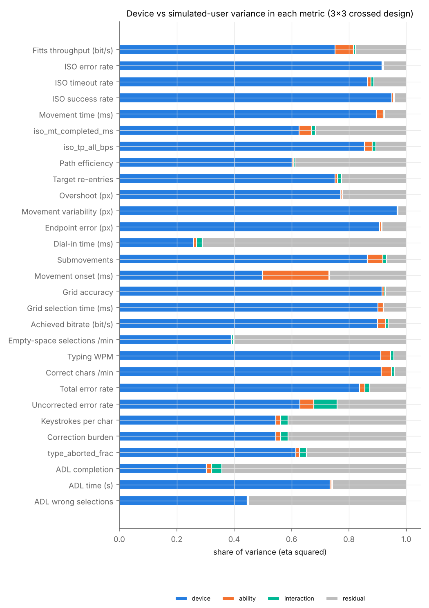
variance_decomposition.png (simulation (synthetic data)). Show table: Results (29 rows) Results Metric Eta2 ability Eta2 device Eta2 interaction Eta2 residual Fitts throughput (bit/s) 0.065 0.751 0.007 0.177 ISO error rate 0.003 0.915 0.003 0.079 ISO timeout rate 0.011 0.866 0.009 0.114 ISO success rate 0.005 0.950 0.005 0.041 Movement time (ms) 0.025 0.895 0.004 0.076 iso_mt_completed_ms 0.043 0.626 0.014 0.317 iso_tp_all_bps 0.028 0.853 0.012 0.106 Path efficiency 0.006 0.602 0.004 0.388 Target re-entries 0.008 0.751 0.015 0.225 Overshoot (px) 0.005 0.771 6.5e−04 0.223 Movement variability (px) 0.003 0.967 3.5e−04 0.029 Endpoint error (px) 0.006 0.906 0.003 0.085 Dial-in time (ms) 0.010 0.258 0.020 0.712 Submovements 0.054 0.864 0.012 0.070 Movement onset (ms) 0.233 0.497 0.003 0.267 Grid accuracy 0.008 0.915 0.005 0.072 Grid selection time (ms) 0.018 0.901 0.002 0.079 Achieved bitrate (bit/s) 0.028 0.899 0.009 0.063 Empty-space selections /min 0.001 0.390 0.006 0.602 Typing WPM 0.035 0.911 0.011 0.044 Correct chars /min 0.036 0.913 0.009 0.042 Total error rate 0.018 0.837 0.018 0.127 Uncorrected error rate 0.048 0.629 0.082 0.241 Keystrokes per char 0.018 0.545 0.025 0.412 Correction burden 0.018 0.545 0.025 0.412 type_aborted_frac 0.012 0.615 0.025 0.348 ADL completion 0.018 0.303 0.037 0.642 ADL time (s) 0.006 0.734 0.004 0.256 ADL wrong selections 0.002 0.445 0.002 0.550
Source: experiments/results/M_user_variability/summary.json. Other data files in the repository folder: data.csv, variance_decomposition.csv.
Effect of incomplete sessions
Simulation (synthetic data)
N_missing_data
· generated 2026-11-27T07:49:50Z
· neurometric 0.1.0, python 3.13.18, numpy 2.5.3, pandas 3.0.5
Simulation results. They characterise the measurement system under modelled input degradation; they are not human or clinical data.
Design 60 virtual participants x 24 scored ISO selections (bci_moderate)
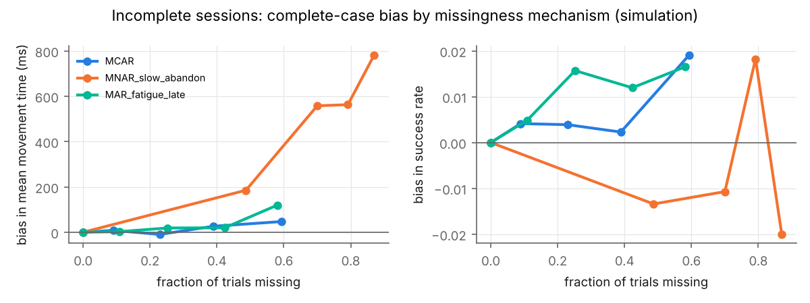
missing_bias.png (simulation (synthetic data)). Results Missing frac target Mechanism Actual missing frac Participants with data Mt bias ms Mt rmse ms Success bias Mt rank corr with full 0 MCAR 0 60 0 0 0 1 0 MNAR_slow_abandon 0 60 0 0 0 1 0 MAR_fatigue_late 0 60 0 0 0 1 0.100 MCAR 0.090 60 8.176 144.8 0.004 0.977 0.100 MNAR_slow_abandon 0.487 59 185.4 790.1 −0.013 0.761 0.100 MAR_fatigue_late 0.109 60 2.746 152.4 0.005 0.973 0.250 MCAR 0.229 60 −9.584 290.8 0.004 0.927 0.250 MNAR_slow_abandon 0.700 57 558.2 1,550 −0.011 0.642 0.250 MAR_fatigue_late 0.252 60 18.783 294.9 0.016 0.922 0.400 MCAR 0.389 60 26.407 407.3 0.002 0.832 0.400 MNAR_slow_abandon 0.792 57 563.0 1,511 0.018 0.670 0.400 MAR_fatigue_late 0.423 60 19.591 428.4 0.012 0.902 0.600 MCAR 0.593 60 47.115 723.4 0.019 0.674 0.600 MNAR_slow_abandon 0.870 53 781.9 1,799 −0.020 0.593 0.600 MAR_fatigue_late 0.581 60 120.0 578.4 0.017 0.838
Source: experiments/results/N_missing_data/summary.json. Other data files in the repository folder: results.csv.
O_telemetry_integrity
Simulation (synthetic data)
O_telemetry_integrity
· generated 2026-11-27T07:37:11Z
Software verification of integrity rules; not field data.
Design Fault injection against the telemetry ingest service: duplicates, conflicting re-sends, out-of-order batches, overlapping periods, clock skew/future periods, forbidden content fields (keystrokes, URLs, titles, free text), consent paused/stopped/withdrawn, hash mismatch; stored aggregates compared with expected values.
N tests 32
Passed 32
Tests test_telemetry::test_valid_payload_passes_validator test_telemetry::test_forbidden_content_rejected_and_never_stored[text] test_telemetry::test_forbidden_content_rejected_and_never_stored[keystrokes] test_telemetry::test_forbidden_content_rejected_and_never_stored[url] test_telemetry::test_forbidden_content_rejected_and_never_stored[window_title] test_telemetry::test_forbidden_content_rejected_and_never_stored[screenshot] test_telemetry::test_forbidden_content_rejected_and_never_stored[clipboard] test_telemetry::test_forbidden_content_rejected_and_never_stored[notes] test_telemetry::test_forbidden_content_rejected_and_never_stored[nested_meta] test_telemetry::test_forbidden_content_rejected_and_never_stored[counts_text] test_telemetry::test_forbidden_content_rejected_and_never_stored[counts_keys] test_telemetry::test_forbidden_content_rejected_and_never_stored[counts_string] test_telemetry::test_forbidden_content_rejected_and_never_stored[app_name] test_telemetry::test_forbidden_content_rejected_and_never_stored[app_url] test_telemetry::test_forbidden_content_rejected_and_never_stored[client_hostname] test_telemetry::test_forbidden_content_rejected_and_never_stored[assist_note] test_telemetry::test_forbidden_content_rejected_and_never_stored[assist_type_free] test_telemetry::test_forbidden_content_rejected_and_never_stored[fatigue_text] test_telemetry::test_forbidden_content_rejected_and_never_stored[fatigue_range] test_telemetry::test_forbidden_content_rejected_and_never_stored[pseudonym_format] test_telemetry::test_forbidden_content_rejected_and_never_stored[device_session_url] test_telemetry::test_content_keys_are_labelled_forbidden test_telemetry::test_consent_and_visible_recording_state test_telemetry::test_app_categories_require_their_own_scope test_telemetry::test_participant_mismatch_and_care_partner test_telemetry::test_local_review_shows_exactly_what_was_sent test_telemetry::test_duplicates_are_idempotent test_telemetry::test_out_of_order_batches_accepted_and_flagged test_telemetry::test_overlapping_periods test_telemetry::test_clock_skew_and_period_sanity test_telemetry::test_batch_hash_integrity test_telemetry::test_experiment_o_stored_aggregates_are_correct Source: experiments/results/O_telemetry_integrity/summary.json. Other data files in the repository folder: none.
Bit-identical reproducibility across processes
Simulation (synthetic data)
P_reproducibility
· generated 2026-11-27T07:52:58Z
· neurometric 0.1.0, python 3.13.18, numpy 2.5.3, pandas 3.0.5
Simulation results. They characterise the measurement system under modelled input degradation; they are not human or clinical data.
Hash in process 88581c006d4bf8e232fca14d6ce4af052ca35fc316851716d30f238acb77facf
Hash in pool 88581c006d4bf8e232fca14d6ce4af052ca35fc316851716d30f238acb77facf
Identical yes
Different seed differs yes
Source: experiments/results/P_reproducibility/summary.json. Other data files in the repository folder: none.
Monte-Carlo verification of statistical estimators
Provenance not recorded
R_statistical_verification
Monte-Carlo verification of neurometric.psychometrics estimators: bias, RMSE, 95% CI coverage and test type-I error under known truth.
This result file does not state whether its data are synthetic. Treat it as computational output, not human or clinical data.
Monte-Carlo repetitions 2,000
Seed 20261127
Runtime (s) 85.800
Checks 86
Checks passed 86
Checks outside tolerance: none.
Known limitations Analysis Scenario Value checked ICC(2,1) 95% CI (McGraw & Wong) n=20,k=2,var_s=0.6,var_session=0.2,var_e=0.2 0.907 ICC(2,k) 95% CI (McGraw & Wong) n=20,k=2,var_s=0.6,var_session=0.2,var_e=0.2 0.907 ICC(2,1) 95% CI (McGraw & Wong) n=50,k=3,var_s=0.9,var_session=0.05,var_e=0.05 0.868 ICC(2,k) 95% CI (McGraw & Wong) n=50,k=3,var_s=0.9,var_session=0.05,var_e=0.05 0.868 ICC(2,1) 95% CI (McGraw & Wong) n=200,k=3,var_s=0.9,var_session=0.05,var_e=0.05 0.780 ICC(2,k) 95% CI (McGraw & Wong) n=200,k=3,var_s=0.9,var_session=0.05,var_e=0.05 0.780 ICC(2,1) 95% CI (McGraw & Wong) n=50,k=6,var_s=0.9,var_session=0.05,var_e=0.05 0.922 ICC(2,k) 95% CI (McGraw & Wong) n=50,k=6,var_s=0.9,var_session=0.05,var_e=0.05 0.922
Versions Item Value Python 3.13.18 Numpy 2.5.3 Scipy 1.18.1 Statsmodels 0.15.0
Show table: Results (86 rows) Results Analysis Scenario Metric True value Mean estimate Bias Rmse Nominal Exact method Known limitation Coverage Miss below Miss above Mean ci width Monte-Carlo repetitions Mcse Value checked Tolerance Passes Rejection rate ICC(2,1) 95% CI (McGraw & Wong) n=20,k=2,var_s=1.0,var_session=0.0,var_e=1.0 ci 0.500 0.478 −0.022 0.176 0.950 no no 0.950 0.026 0.025 0.671 2,000 0.005 0.950 0.035 yes n/a ICC(2,k) 95% CI (McGraw & Wong) n=20,k=2,var_s=1.0,var_session=0.0,var_e=1.0 ci 0.667 0.625 −0.041 0.195 0.950 no no 0.950 0.026 0.025 0.803 2,000 0.005 0.950 0.035 yes n/a ICC(3,1) 95% CI (McGraw & Wong) n=20,k=2,var_s=1.0,var_session=0.0,var_e=1.0 ci 0.500 0.479 −0.021 0.177 0.950 yes no 0.948 0.025 0.028 0.669 2,000 0.005 0.948 0.015 yes n/a ICC(3,k) 95% CI (McGraw & Wong) n=20,k=2,var_s=1.0,var_session=0.0,var_e=1.0 ci 0.667 0.626 −0.041 0.194 0.950 yes no 0.948 0.025 0.028 0.797 2,000 0.005 0.948 0.015 yes n/a ICC(1,1) 95% CI (McGraw & Wong) n=20,k=2,var_s=1.0,var_session=0.0,var_e=1.0 ci 0.500 0.478 −0.022 0.175 0.950 yes no 0.946 0.027 0.027 0.660 2,000 0.005 0.946 0.015 yes n/a ICC(1,k) 95% CI (McGraw & Wong) n=20,k=2,var_s=1.0,var_session=0.0,var_e=1.0 ci 0.667 0.626 −0.041 0.191 0.950 yes no 0.946 0.027 0.027 0.780 2,000 0.005 0.946 0.015 yes n/a ICC(2,1) 95% CI (generalized CI) n=20,k=2,var_s=1.0,var_session=0.0,var_e=1.0 ci 0.500 0.478 −0.022 0.176 0.950 no no 0.961 0.037 0.003 0.689 2,000 0.005 0.961 0.035 yes n/a ICC(2,k) 95% CI (generalized CI) n=20,k=2,var_s=1.0,var_session=0.0,var_e=1.0 ci 0.667 0.625 −0.041 0.195 0.950 no no 0.961 0.037 0.003 0.772 2,000 0.005 0.961 0.035 yes n/a ICC(2,1) 95% CI (McGraw & Wong) n=30,k=3,var_s=0.7,var_session=0.0,var_e=0.3 ci 0.700 0.688 −0.012 0.080 0.950 no no 0.953 0.026 0.021 0.305 2,000 0.005 0.953 0.035 yes n/a ICC(2,k) 95% CI (McGraw & Wong) n=30,k=3,var_s=0.7,var_session=0.0,var_e=0.3 ci 0.875 0.866 −0.009 0.047 0.950 no no 0.953 0.026 0.021 0.178 2,000 0.005 0.953 0.035 yes n/a ICC(3,1) 95% CI (McGraw & Wong) n=30,k=3,var_s=0.7,var_session=0.0,var_e=0.3 ci 0.700 0.688 −0.012 0.081 0.950 yes no 0.950 0.028 0.023 0.305 2,000 0.005 0.950 0.015 yes n/a ICC(3,k) 95% CI (McGraw & Wong) n=30,k=3,var_s=0.7,var_session=0.0,var_e=0.3 ci 0.875 0.866 −0.009 0.047 0.950 yes no 0.950 0.028 0.023 0.178 2,000 0.005 0.950 0.015 yes n/a ICC(1,1) 95% CI (McGraw & Wong) n=30,k=3,var_s=0.7,var_session=0.0,var_e=0.3 ci 0.700 0.688 −0.012 0.080 0.950 yes no 0.952 0.027 0.021 0.303 2,000 0.005 0.952 0.015 yes n/a ICC(1,k) 95% CI (McGraw & Wong) n=30,k=3,var_s=0.7,var_session=0.0,var_e=0.3 ci 0.875 0.866 −0.009 0.047 0.950 yes no 0.952 0.027 0.021 0.177 2,000 0.005 0.952 0.015 yes n/a ICC(2,1) 95% CI (generalized CI) n=30,k=3,var_s=0.7,var_session=0.0,var_e=0.3 ci 0.700 0.688 −0.012 0.080 0.950 no no 0.960 0.035 0.004 0.370 2,000 0.005 0.960 0.035 yes n/a ICC(2,k) 95% CI (generalized CI) n=30,k=3,var_s=0.7,var_session=0.0,var_e=0.3 ci 0.875 0.866 −0.009 0.047 0.950 no no 0.960 0.035 0.004 0.235 2,000 0.005 0.960 0.035 yes n/a ICC(2,1) 95% CI (McGraw & Wong) n=15,k=4,var_s=0.8,var_session=0.0,var_e=0.2 ci 0.800 0.781 −0.019 0.086 0.950 no no 0.949 0.024 0.028 0.299 2,000 0.005 0.949 0.035 yes n/a ICC(2,k) 95% CI (McGraw & Wong) n=15,k=4,var_s=0.8,var_session=0.0,var_e=0.2 ci 0.941 0.932 −0.009 0.035 0.950 no no 0.949 0.024 0.028 0.123 2,000 0.005 0.949 0.035 yes n/a ICC(3,1) 95% CI (McGraw & Wong) n=15,k=4,var_s=0.8,var_session=0.0,var_e=0.2 ci 0.800 0.781 −0.019 0.086 0.950 yes no 0.945 0.025 0.031 0.301 2,000 0.005 0.945 0.015 yes n/a ICC(3,k) 95% CI (McGraw & Wong) n=15,k=4,var_s=0.8,var_session=0.0,var_e=0.2 ci 0.941 0.932 −0.009 0.035 0.950 yes no 0.945 0.025 0.031 0.124 2,000 0.005 0.945 0.015 yes n/a ICC(1,1) 95% CI (McGraw & Wong) n=15,k=4,var_s=0.8,var_session=0.0,var_e=0.2 ci 0.800 0.781 −0.019 0.086 0.950 yes no 0.947 0.025 0.029 0.297 2,000 0.005 0.947 0.015 yes n/a ICC(1,k) 95% CI (McGraw & Wong) n=15,k=4,var_s=0.8,var_session=0.0,var_e=0.2 ci 0.941 0.932 −0.009 0.035 0.950 yes no 0.947 0.025 0.029 0.122 2,000 0.005 0.947 0.015 yes n/a ICC(2,1) 95% CI (generalized CI) n=15,k=4,var_s=0.8,var_session=0.0,var_e=0.2 ci 0.800 0.781 −0.019 0.086 0.950 no no 0.957 0.031 0.013 0.336 2,000 0.005 0.957 0.035 yes n/a ICC(2,k) 95% CI (generalized CI) n=15,k=4,var_s=0.8,var_session=0.0,var_e=0.2 ci 0.941 0.932 −0.009 0.035 0.950 no no 0.957 0.031 0.013 0.146 2,000 0.005 0.957 0.035 yes n/a ICC(2,1) 95% CI (McGraw & Wong) n=30,k=3,var_s=0.7,var_session=0.1,var_e=0.2 ci 0.700 0.698 −0.002 0.097 0.950 no no 0.929 0.015 0.056 0.386 2,000 0.005 0.929 0.035 yes n/a ICC(2,k) 95% CI (McGraw & Wong) n=30,k=3,var_s=0.7,var_session=0.1,var_e=0.2 ci 0.875 0.869 −0.006 0.055 0.950 no no 0.929 0.015 0.056 0.257 2,000 0.005 0.929 0.035 yes n/a ICC(3,1) 95% CI (McGraw & Wong) n=30,k=3,var_s=0.7,var_session=0.1,var_e=0.2 ci 0.778 0.768 −0.010 0.067 0.950 yes no 0.947 0.029 0.025 0.245 2,000 0.005 0.947 0.015 yes n/a ICC(3,k) 95% CI (McGraw & Wong) n=30,k=3,var_s=0.7,var_session=0.1,var_e=0.2 ci 0.913 0.907 −0.006 0.033 0.950 yes no 0.947 0.029 0.025 0.123 2,000 0.005 0.947 0.015 yes n/a ICC(2,1) 95% CI (generalized CI) n=30,k=3,var_s=0.7,var_session=0.1,var_e=0.2 ci 0.700 0.698 −0.002 0.097 0.950 no no 0.958 0.036 0.005 0.590 2,000 0.005 0.958 0.035 yes n/a ICC(2,k) 95% CI (generalized CI) n=30,k=3,var_s=0.7,var_session=0.1,var_e=0.2 ci 0.875 0.869 −0.006 0.055 0.950 no no 0.958 0.036 0.005 0.503 2,000 0.005 0.958 0.035 yes n/a ICC(2,1) 95% CI (McGraw & Wong) n=20,k=2,var_s=0.6,var_session=0.2,var_e=0.2 ci 0.600 0.621 0.021 0.165 0.950 no yes 0.907 0.019 0.074 0.644 2,000 0.005 0.907 0.035 yes n/a ICC(2,k) 95% CI (McGraw & Wong) n=20,k=2,var_s=0.6,var_session=0.2,var_e=0.2 ci 0.750 0.753 0.003 0.137 0.950 no yes 0.907 0.019 0.074 0.659 2,000 0.005 0.907 0.035 yes n/a ICC(3,1) 95% CI (McGraw & Wong) n=20,k=2,var_s=0.6,var_session=0.2,var_e=0.2 ci 0.750 0.733 −0.017 0.113 0.950 yes no 0.939 0.030 0.031 0.430 2,000 0.005 0.939 0.015 yes n/a ICC(3,k) 95% CI (McGraw & Wong) n=20,k=2,var_s=0.6,var_session=0.2,var_e=0.2 ci 0.857 0.841 −0.016 0.084 0.950 yes no 0.939 0.030 0.031 0.339 2,000 0.005 0.939 0.015 yes n/a ICC(2,1) 95% CI (generalized CI) n=20,k=2,var_s=0.6,var_session=0.2,var_e=0.2 ci 0.600 0.621 0.021 0.165 0.950 no no 0.958 0.037 0.004 0.764 2,000 0.005 0.958 0.035 yes n/a ICC(2,k) 95% CI (generalized CI) n=20,k=2,var_s=0.6,var_session=0.2,var_e=0.2 ci 0.750 0.753 0.003 0.137 0.950 no no 0.958 0.037 0.004 0.820 2,000 0.005 0.958 0.035 yes n/a ICC(2,1) 95% CI (McGraw & Wong) n=50,k=3,var_s=0.9,var_session=0.05,var_e=0.05 ci 0.900 0.899 −8.0e−04 0.046 0.950 no yes 0.868 0.007 0.124 0.258 2,000 0.005 0.868 0.035 yes n/a ICC(2,k) 95% CI (McGraw & Wong) n=50,k=3,var_s=0.9,var_session=0.05,var_e=0.05 ci 0.964 0.963 −9.3e−04 0.019 0.950 no yes 0.868 0.007 0.124 0.135 2,000 0.005 0.868 0.035 yes n/a ICC(3,1) 95% CI (McGraw & Wong) n=50,k=3,var_s=0.9,var_session=0.05,var_e=0.05 ci 0.947 0.946 −0.002 0.013 0.950 yes no 0.954 0.022 0.024 0.052 2,000 0.005 0.954 0.015 yes n/a ICC(3,k) 95% CI (McGraw & Wong) n=50,k=3,var_s=0.9,var_session=0.05,var_e=0.05 ci 0.982 0.981 −6.9e−04 0.005 0.950 yes no 0.954 0.022 0.024 0.019 2,000 0.005 0.954 0.015 yes n/a ICC(2,1) 95% CI (generalized CI) n=50,k=3,var_s=0.9,var_session=0.05,var_e=0.05 ci 0.900 0.899 −8.0e−04 0.046 0.950 no no 0.955 0.026 0.018 0.528 2,000 0.005 0.955 0.035 yes n/a ICC(2,k) 95% CI (generalized CI) n=50,k=3,var_s=0.9,var_session=0.05,var_e=0.05 ci 0.964 0.963 −9.3e−04 0.019 0.950 no no 0.955 0.026 0.018 0.346 2,000 0.005 0.955 0.035 yes n/a ICC(2,1) 95% CI (McGraw & Wong) n=200,k=3,var_s=0.9,var_session=0.05,var_e=0.05 ci 0.900 0.901 0.001 0.043 0.950 no yes 0.780 0.005 0.215 0.234 2,000 0.005 0.780 0.035 yes n/a ICC(2,k) 95% CI (McGraw & Wong) n=200,k=3,var_s=0.9,var_session=0.05,var_e=0.05 ci 0.964 0.964 −1.1e−04 0.018 0.950 no yes 0.780 0.005 0.215 0.124 2,000 0.005 0.780 0.035 yes n/a ICC(3,1) 95% CI (McGraw & Wong) n=200,k=3,var_s=0.9,var_session=0.05,var_e=0.05 ci 0.947 0.947 −5.3e−04 0.006 0.950 yes no 0.949 0.028 0.023 0.025 2,000 0.005 0.949 0.015 yes n/a ICC(3,k) 95% CI (McGraw & Wong) n=200,k=3,var_s=0.9,var_session=0.05,var_e=0.05 ci 0.982 0.982 −2.0e−04 0.002 0.950 yes no 0.949 0.028 0.023 0.009 2,000 0.005 0.949 0.015 yes n/a ICC(2,1) 95% CI (generalized CI) n=200,k=3,var_s=0.9,var_session=0.05,var_e=0.05 ci 0.900 0.901 0.001 0.043 0.950 no no 0.950 0.027 0.023 0.510 2,000 0.005 0.950 0.035 yes n/a ICC(2,k) 95% CI (generalized CI) n=200,k=3,var_s=0.9,var_session=0.05,var_e=0.05 ci 0.964 0.964 −1.1e−04 0.018 0.950 no no 0.950 0.027 0.023 0.334 2,000 0.005 0.950 0.035 yes n/a ICC(2,1) 95% CI (McGraw & Wong) n=50,k=6,var_s=0.9,var_session=0.05,var_e=0.05 ci 0.900 0.896 −0.004 0.036 0.950 no yes 0.922 0.013 0.065 0.155 2,000 0.005 0.922 0.035 yes n/a ICC(2,k) 95% CI (McGraw & Wong) n=50,k=6,var_s=0.9,var_session=0.05,var_e=0.05 ci 0.982 0.981 −9.5e−04 0.007 0.950 no yes 0.922 0.013 0.065 0.035 2,000 0.005 0.922 0.035 yes n/a ICC(3,1) 95% CI (McGraw & Wong) n=50,k=6,var_s=0.9,var_session=0.05,var_e=0.05 ci 0.947 0.945 −0.002 0.012 0.950 yes no 0.955 0.024 0.021 0.046 2,000 0.005 0.955 0.015 yes n/a ICC(3,k) 95% CI (McGraw & Wong) n=50,k=6,var_s=0.9,var_session=0.05,var_e=0.05 ci 0.991 0.990 −4.7e−04 0.002 0.950 yes no 0.955 0.024 0.021 0.008 2,000 0.005 0.955 0.015 yes n/a ICC(2,1) 95% CI (generalized CI) n=50,k=6,var_s=0.9,var_session=0.05,var_e=0.05 ci 0.900 0.896 −0.004 0.036 0.950 no no 0.949 0.035 0.017 0.223 2,000 0.005 0.949 0.035 yes n/a ICC(2,k) 95% CI (generalized CI) n=50,k=6,var_s=0.9,var_session=0.05,var_e=0.05 ci 0.982 0.981 −9.5e−04 0.007 0.950 no no 0.949 0.035 0.017 0.055 2,000 0.005 0.949 0.035 yes n/a Bland-Altman lower LoA 95% CI (ba1999) n=20,bias=0.5,sd_diff=1.0 ci −1.460 −1.434 0.026 0.381 0.950 no no 0.954 0.002 0.044 1.604 2,000 0.005 0.954 0.035 yes n/a Bland-Altman upper LoA 95% CI (ba1999) n=20,bias=0.5,sd_diff=1.0 ci 2.460 2.429 −0.031 0.384 0.950 no no 0.942 0.056 0.003 1.604 2,000 0.005 0.942 0.035 yes n/a Bland-Altman lower LoA 95% CI (exact) n=20,bias=0.5,sd_diff=1.0 ci −1.460 −1.403 0.057 0.393 0.950 yes no 0.944 0.023 0.033 1.620 2,000 0.005 0.944 0.015 yes n/a Bland-Altman upper LoA 95% CI (exact) n=20,bias=0.5,sd_diff=1.0 ci 2.460 2.428 −0.032 0.390 0.950 yes no 0.947 0.025 0.028 1.620 2,000 0.005 0.947 0.015 yes n/a Bland-Altman bias 95% CI (t) n=20,bias=0.5,sd_diff=1.0 ci 0.500 0.512 0.012 0.220 0.950 yes no 0.954 0.022 0.024 0.915 2,000 0.005 0.954 0.015 yes n/a Bland-Altman lower LoA 95% CI (ba1999) n=60,bias=-1.0,sd_diff=2.0 ci −4.920 −4.908 0.012 0.442 0.950 no no 0.942 0.009 0.049 1.768 2,000 0.005 0.942 0.035 yes n/a Bland-Altman upper LoA 95% CI (ba1999) n=60,bias=-1.0,sd_diff=2.0 ci 2.920 2.897 −0.023 0.442 0.950 no no 0.948 0.043 0.009 1.768 2,000 0.005 0.948 0.035 yes n/a Bland-Altman lower LoA 95% CI (exact) n=60,bias=-1.0,sd_diff=2.0 ci −4.920 −4.908 0.012 0.437 0.950 yes no 0.955 0.025 0.021 1.779 2,000 0.005 0.955 0.015 yes n/a Bland-Altman upper LoA 95% CI (exact) n=60,bias=-1.0,sd_diff=2.0 ci 2.920 2.899 −0.021 0.448 0.950 yes no 0.944 0.029 0.028 1.779 2,000 0.005 0.944 0.015 yes n/a Bland-Altman bias 95% CI (t) n=60,bias=-1.0,sd_diff=2.0 ci -1 −1.004 −0.004 0.263 0.950 yes no 0.943 0.032 0.026 1.029 2,000 0.005 0.943 0.015 yes n/a Lin CCC 95% CI (Fisher z) n=30,shift=0.3,sd_ratio=1.0,rho=0.8 ci 0.766 0.752 −0.014 0.080 0.950 no no 0.935 0.037 0.028 0.303 2,000 0.005 0.935 0.035 yes n/a Lin CCC 95% CI (Fisher z) n=100,shift=0.0,sd_ratio=1.2,rho=0.9 ci 0.885 0.883 −0.002 0.020 0.950 no no 0.954 0.022 0.024 0.081 2,000 0.005 0.954 0.035 yes n/a Hedges g 95% CI (noncentral_t) n1=10,n2=12,delta=0.8 ci 0.800 0.794 −0.006 0.453 0.950 yes no 0.946 0.032 0.022 1.707 2,000 0.005 0.946 0.015 yes n/a Hedges g 95% CI (normal) n1=10,n2=12,delta=0.8 ci 0.800 0.824 0.024 0.462 0.950 no no 0.953 0.025 0.022 1.767 2,000 0.005 0.953 0.035 yes n/a Hedges g 95% CI (noncentral_t) n1=30,n2=30,delta=0.3 ci 0.300 0.299 −0.001 0.263 0.950 yes no 0.946 0.032 0.022 1.009 2,000 0.005 0.946 0.015 yes n/a Hedges g 95% CI (normal) n1=30,n2=30,delta=0.3 ci 0.300 0.298 −0.002 0.261 0.950 no no 0.955 0.021 0.024 1.022 2,000 0.005 0.955 0.035 yes n/a Cohen d_z 95% CI (noncentral t) n=15,dz=0.5 ci 0.500 0.545 0.045 0.299 0.950 yes no 0.956 0.023 0.021 1.106 2,000 0.005 0.956 0.015 yes n/a AUC 95% CI (DeLong) n1=20,n2=25,shift=1.0 ci 0.760 0.761 6.2e−04 0.072 0.950 no no 0.927 0.015 0.058 0.282 2,000 0.005 0.927 0.035 yes n/a AUC 95% CI (DeLong) n1=50,n2=50,shift=0.5 ci 0.638 0.638 −1.2e−04 0.054 0.950 no no 0.951 0.019 0.029 0.217 2,000 0.005 0.951 0.035 yes n/a pearson r 95% CI (Fisher z) n=25,rho=0.5 ci 0.500 0.495 −0.005 0.159 0.950 no no 0.948 0.022 0.030 0.599 2,000 0.005 0.948 0.035 yes n/a spearman r 95% CI (Fisher z) n=25,rho=0.5 ci 0.483 0.466 −0.016 0.167 0.950 no no 0.947 0.021 0.032 0.635 2,000 0.005 0.947 0.035 yes n/a pearson r 95% CI (Fisher z) n=80,rho=0.8 ci 0.800 0.799 −0.001 0.041 0.950 no no 0.958 0.018 0.025 0.163 2,000 0.005 0.958 0.035 yes n/a spearman r 95% CI (Fisher z) n=80,rho=0.8 ci 0.786 0.779 −0.007 0.049 0.950 no no 0.941 0.035 0.024 0.182 2,000 0.005 0.941 0.035 yes n/a Cronbach alpha 95% CI (Feldt) n=40,k=5,parallel items ci 0.769 0.760 −0.010 0.065 0.950 yes no 0.953 0.024 0.023 0.242 2,000 0.005 0.953 0.015 yes n/a TOST type-I error at margin (Welch) n=20/group, true diff = margin = 0.5 rate n/a n/a n/a n/a 0.050 no no n/a n/a n/a n/a 2,000 0.005 0.001 0.035 yes 0.001 TOST type-I error at margin (Welch) n=60/group, true diff = margin = 0.5 rate n/a n/a n/a n/a 0.050 no no n/a n/a n/a n/a 2,000 0.005 0.046 0.035 yes 0.046 Little MCAR type-I error under MCAR n=150,p=3,15% MCAR rate n/a n/a n/a n/a 0.050 no no n/a n/a n/a n/a 2,000 0.005 0.047 0.035 yes 0.047 MDC95 false-positive rate in stable subjects (estimated SEM) n=40 calibration, var_e=0.25 mean proportion |change| > MDC95 n/a n/a n/a n/a 0.050 no no n/a n/a n/a n/a 2,000 0.005 0.058 0.035 yes 0.058 ICC(3,1) point estimate, mixed-model REML, 15% MCAR n=40,k=3,var_s=0.7,var_session=0.1,var_e=0.2 bias 0.778 0.776 −0.002 0.053 0 no no n/a n/a n/a n/a 200 0.004 −0.002 0.030 yes n/a ICC(3,1) point estimate, complete-case ANOVA, 15% MCAR n=40,k=3,var_s=0.7,var_session=0.1,var_e=0.2 bias 0.778 0.776 −0.001 0.068 0 no no n/a n/a n/a n/a 200 0.005 −0.001 0.030 yes n/a ICC(2,1) point estimate, mixed-model REML, 15% MCAR n=40,k=3,var_s=0.7,var_session=0.1,var_e=0.2 bias 0.700 0.698 −0.002 0.092 0 no no n/a n/a n/a n/a 200 0.007 −0.002 0.030 yes n/a ICC(2,1) point estimate, complete-case ANOVA, 15% MCAR n=40,k=3,var_s=0.7,var_session=0.1,var_e=0.2 bias 0.700 0.695 −0.005 0.107 0 no no n/a n/a n/a n/a 200 0.008 −0.005 0.030 yes n/a
Source: experiments/results/R_statistical_verification/coverage_results.json. Other data files in the repository folder: coverage_results.csv.
Event-processing throughput and integrity
Simulation (synthetic data)
S_event_latency
· generated 2026-11-27T07:57:08Z
· neurometric 0.1.0, python 3.13.18, numpy 2.5.3, pandas 3.0.5
Simulation results. They characterise the measurement system under modelled input degradation; they are not human or clinical data.
All round-trips identical yes
Note Server-side processing cost only. Browser-side timing is in browser_*.json from the web test suite.
Machine Item Value Python 3.13.18 Processor x86_64
Session Item Value Events 15,242 Trials 60
Medians Item Value Events 15,242 N trials 60 Validate events per s 2,134,486 Check stream events per s 2,302,791 Segment and score ms 101.7 Score peak mem mb 3.246 Json roundtrip ms 353.9 Roundtrip hash identical 1 Json bytes 3,436,815
Per-event validation time (µs) Item Value P50 0.499 P99 0.814 Max 38.023
Event-stream integrity Item Value n 15,242 Non monotonic 0 Duplicate seq 0 Seq gaps 0 Gap events 0
Source: experiments/results/S_event_latency/summary.json. Other data files in the repository folder: browser_cdp_latency.csv, browser_latency.csv, browser_long_session_memory.csv, browser_summary.json, python_pipeline.csv.
Real public data: NLB MC_RTT reaching dataset
Real public data (non-clinical)
X1_external_mc_rtt
· generated 2026-11-27T07:04:05Z
· neurometric 0.1.0, python 3.13.18, numpy 2.5.3, pandas 3.0.5
Real public data processed by NeuroMetric. See caveats; not a clinical population unless stated.
Dataset NLB MC_RTT DANDI:000129 (CC-BY-4.0), sha256 verified
Events 66,639
Reaches 541
Median reach time (ms) 1,110
Median path efficiency 0.866
Median target reentries note not computable (target width unknown)
Pooled effective throughput (bit/s, mean of bins) 1.953
mc_rtt_metrics.png (real public data (non-clinical)). Event-stream integrity Item Value n 66,639 Non monotonic 0 Duplicate seq 0 Seq gaps 0 Gap events 0
Throughput by reach distance Distance bin mm n De mm We mm IDe bits MT ms TPe bps (9.548, 32.354] 109 22.264 13.948 1.376 1,046 1.316 (32.354, 47.163] 108 40.131 13.421 1.996 1,160 1.721 (47.163, 62.549] 108 54.834 13.353 2.352 1,193 1.972 (62.549, 78.897] 108 69.511 10.692 2.907 1,217 2.389 (78.897, 114.543] 108 90.651 11.211 3.184 1,345 2.367
Caveats able-bodied macaque hand control, not BCI, not a clinical population acquisition time inferred from target change (includes any hold time) effective-width throughput only; nominal ID/error rate unavailable 1 session; decimated to 100 Hz Source: experiments/results/X1_external_mc_rtt/summary.json. Other data files in the repository folder: reaches.csv, throughput_by_distance.csv.